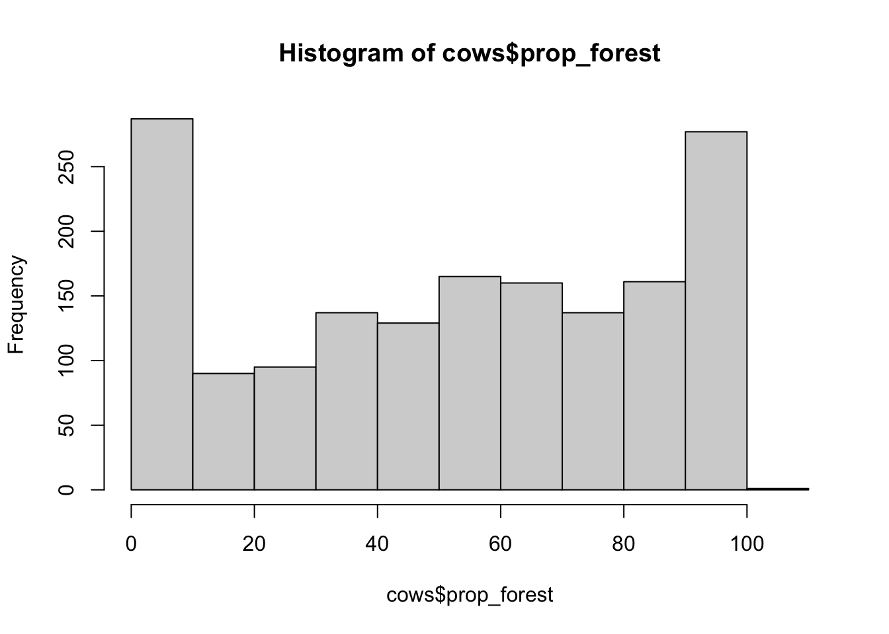

Statistical Modeling
Module 2: Generalized linear models (GLMs)
7 February 2025
Materials
Scripts
Click here to download the script! Save the script to the ‘scripts’’ folder in your project directory you set up in the previous module.
Load your script in RStudio. To do this, open RStudio and click the files window and select the scripts folder and then this script.
Cheat sheets
There are no cheat sheets specific to this module but don’t forget the ones you’ve already printed for previous modules!
Github repository
There is a Github repository that shows the full data formatting, statistical analysis, and graphics process for the publication associated with this data. For more information about the data check out the #README file.
Data
For this module we will work with the cows data from the brown bear conflict data set which should be in the data/raw folder
Read in the cows data from the data/raw folder and in the same code chunk set the column names to lowercase. And then take a look at the structure of the data; you’ll want to go back and edit your code to specify the data types for some variables if they aren’t reading in properly
You can check out this README file from the Githup repository to learn more about the data, the data you are working with is slightly different from the data in this repository but this will give you a general understanding of the variables and practice with reading/interpreting information from a README file.
# Data ----------------------
# INSERT YOUR CODE HERE ----------------------
# Read in data for this module
cows <- read_csv('data/raw/cows.csv',
col_types = cols(Damage = col_factor(),
Year = col_factor(),
Month = col_factor(),
Targetspp = col_factor(),
Hunting = col_factor(),
.default = col_number())) %>%
rename_with(tolower)
# check data structure
str(cows)## spc_tbl_ [1,639 × 35] (S3: spec_tbl_df/tbl_df/tbl/data.frame)
## $ ...1 : num [1:1639] 1 2 3 4 5 6 7 8 9 10 ...
## $ damage : Factor w/ 2 levels "1","0": 1 1 1 1 1 1 1 1 1 1 ...
## $ year : Factor w/ 9 levels "2012","2014",..: 1 2 1 3 1 2 1 2 1 3 ...
## $ month : Factor w/ 11 levels "10","9","6","8",..: 1 2 1 3 2 3 4 2 2 3 ...
## $ targetspp : Factor w/ 1 level "bovine": 1 1 1 1 1 1 1 1 1 1 ...
## $ point_x : num [1:1639] 503840 513946 514079 514792 516028 ...
## $ point_y : num [1:1639] 559354 564975 556360 546860 558289 ...
## $ ptx : num [1:1639] 503870 513946 514099 514859 516092 ...
## $ pty : num [1:1639] 559440 565000 556427 546908 558339 ...
## $ bear_abund : num [1:1639] 34 42 34 43 34 32 34 42 34 34 ...
## $ landcover_code : num [1:1639] 243 243 321 211 231 231 231 321 321 242 ...
## $ altitude : num [1:1639] 866 748 799 807 969 ...
## $ human_population : num [1:1639] 0 0 30 98 14 0 0 0 0 45 ...
## $ dist_to_forest : num [1:1639] 319 122 135 590 106 ...
## $ dist_to_town : num [1:1639] 1400 2663 1034 436 733 ...
## $ livestock_killed : num [1:1639] 1 1 1 1 1 1 2 2 1 1 ...
## $ numberdamageperplot: num [1:1639] 1 1 1 1 1 1 51 2 1 1 ...
## $ shannondivindex : num [1:1639] 1.278 0.762 1.382 1.449 1.429 ...
## $ prop_arable : num [1:1639] 0 0 5.58 23.78 29.15 ...
## $ prop_orchards : num [1:1639] 0 0 0 0 0 0 0 0 0 0 ...
## $ prop_pasture : num [1:1639] 35.8 2.69 1.14 8.64 10.79 ...
## $ prop_ag_mosaic : num [1:1639] 8.81 0 15.03 0 9.67 ...
## $ prop_seminatural : num [1:1639] 42.2 35.5 29.2 23.8 4.1 ...
## $ prop_deciduous : num [1:1639] 10.55 61.77 5.72 36.81 43.11 ...
## $ prop_coniferous : num [1:1639] 0 0 0 0 0 ...
## $ prop_mixedforest : num [1:1639] 0 0 0 0 0 ...
## $ prop_grassland : num [1:1639] 0 0 43.33 0 3.17 ...
## $ prop_for_regen : num [1:1639] 0 0 0 0 0 ...
## $ landcover_2 : num [1:1639] 240 240 231 210 231 231 231 231 231 240 ...
## $ prop_natural : num [1:1639] 42.2 35.5 29.2 23.8 4.1 ...
## $ prop_ag : num [1:1639] 8.81 0 20.61 23.78 38.83 ...
## $ prop_gras : num [1:1639] 35.8 2.69 44.48 8.64 13.96 ...
## $ hunting : Factor w/ 2 levels "1","0": 1 1 1 1 1 1 1 1 1 1 ...
## $ prop_open : num [1:1639] 35.8 2.69 44.48 8.64 13.96 ...
## $ prop_forest : num [1:1639] 10.55 61.77 5.72 36.81 43.11 ...
## - attr(*, "spec")=
## .. cols(
## .. .default = col_number(),
## .. ...1 = col_number(),
## .. Damage = col_factor(levels = NULL, ordered = FALSE, include_na = FALSE),
## .. Year = col_factor(levels = NULL, ordered = FALSE, include_na = FALSE),
## .. Month = col_factor(levels = NULL, ordered = FALSE, include_na = FALSE),
## .. Targetspp = col_factor(levels = NULL, ordered = FALSE, include_na = FALSE),
## .. POINT_X = col_number(),
## .. POINT_Y = col_number(),
## .. PTX = col_number(),
## .. PTY = col_number(),
## .. Bear_abund = col_number(),
## .. Landcover_code = col_number(),
## .. Altitude = col_number(),
## .. Human_population = col_number(),
## .. Dist_to_forest = col_number(),
## .. Dist_to_town = col_number(),
## .. Livestock_killed = col_number(),
## .. Numberdamageperplot = col_number(),
## .. ShannonDivIndex = col_number(),
## .. prop_arable = col_number(),
## .. prop_orchards = col_number(),
## .. prop_pasture = col_number(),
## .. prop_ag_mosaic = col_number(),
## .. prop_seminatural = col_number(),
## .. prop_deciduous = col_number(),
## .. prop_coniferous = col_number(),
## .. prop_mixedforest = col_number(),
## .. prop_grassland = col_number(),
## .. prop_for_regen = col_number(),
## .. Landcover_2 = col_number(),
## .. Prop_natural = col_number(),
## .. Prop_ag = col_number(),
## .. Prop_gras = col_number(),
## .. Hunting = col_factor(levels = NULL, ordered = FALSE, include_na = FALSE),
## .. Prop_open = col_number(),
## .. Prop_forest = col_number()
## .. )
## - attr(*, "problems")=<externalptr>Basics of a GLM
A Generalized liner model (GLM) is a variation on a linear regression which allows the response variable to have a distribution other than the normal (Gaussian) distribution. This is useful because one of the main assumptions of a linear regression is that the response variable is normally distributed, but ecological data often violates this assumption which can lead to unreliable model estimates.
Steps of GLM
When applying a generalized linear model to your data follow the steps below
Choose the most appropriate distribution for the response variable. e.g., Gaussian, Poisson, negative binomial, gamma, binomial, etc.
Define the systematic component in terms of explanatory variables (write out your model!).
Specify the link between the mean of the response variable and the systematic part.
Check model assumptions (check for multicolinearity before running models).
Distributions
Some common non-normal distributions for wildlife data include…
Binomial distribution
The binomial distribution represents the probability of an outcome given only two options (e.g. 0s and 1s). Presence/absence data from remote camera traps is a great example of this.

Poisson distribution
The poisson distribution represents how many times an event is likely to occur over a specified period. Count data follow the poisson distribution.

Negative binomial distribution
The negative binomial distribution is also used for count data but when the data are also over dispersed. We can check for dispersion using a function in R after we run our model.
Which distribution to use?
Here is a helpful table from Thiele and Markussen 2012 you can use to determine which distribution you should use with your data.

Using some of the functions we covered in previous modules, take a look at the data and determine what distribution would you use given the response variable is damage.
# look at full data
# View(cows) # this is commented out because rMarkdown won't run the View() function
# check out info on response variable
summary(cows$damage)## 1 0
## 410 1229We can also plot the data to look at this.
Normally I would use the histogram function hist() to do
this but… try it and see what happens
remember you can use ?hist() to look up the R documentation if you
aren’t familiar with this function yet.
Since this variable is a factor we can visualize it with the
plot() function instead
plot(cows$damage)
This histogram above should make it fairly clear that the binomial distribution would be a good fit for this data given the response variable contains 1s and 0s (a binary response).
Assumptions of GLM
While we don’t have to worry about the assumption of normality for our response variable there are still several important assumptions of a glm that can lead to unreliable model estimates if violated.
Independence
The data are independently distributed, i.e., cases are independent.
This assumption is checked in multiple ways. First, this is often related to how the data were collected, ensuring that each observation is unique and you do not have pseudo-replication in the data. Second, you need to check for multicolinearity between variables in your model. This can be done by running correlation tests or plotting a correlation matrix with your explanatory variables. It is also checked after you’ve fit a model by calculating Variance Inflation Factor (VIF).
Homogeneity of variance
When you have categorical variables or groups within your data you need to check that the variance within groups is equal for all groups. This is commonly done with Levene’s test (F test) which tests the null hypothesis that the variance is equal across groups. In order to not violate this assumption you want to result of this test to yield a p-value GREATER than 0.05.
Normality of residuals
While the dependent variable does NOT need to be normally distributed, because it assumes a different distribution specified in the model (e.g. binomial, Poisson, etc.) the residuals should be normally distributed without a skew or kurtosis (long tail).
The normality of the residuals can be assessed via some tests, like the Shapiro-Wilk, or the Kolmogorov-Smirnov tests, but is often best assessed visually via a qq-plot. (Note that this assumption is generally the least important of the set; if it is not met, your beta estimates will still be unbiased, but your p-values will be inaccurate, and as we’ve covered in this class we shouldn’t rely on p-values as our only or primary indicator of variable importance).
Influential observations
If you have a small data set or are concerned about outliers in your data. Assessing influence of individual observations may be useful. There are several ways to do this, first you can re-run your analysis without a particular data point and see how much your results and interpretation of said results changes; second, you can calculate Cook’s distance which provides and estimate of the influence of a data point.
With the exception of multicolinearity, GLM model assumptions are generally checked after you have done your analysis (e.g. fit your model).
Before fitting a model
First before we fit a model we want to test for correlation between our explanatory variables.
Test for multicolinearity
The cows data has already been checked, cleaned, and formatted for analysis using many of the tools and techniques we covered in the intro to R modules so we can jump right into exploring potential explanatory variables and checking the assumption of independence.
First let’s make a subset of the data that only includes
Numeric explanatory variables we plan to use in models
(this is because we can’t quantify correlation between non-numeric and
numeric variables). Using dplyr
select() subset the cows data to only include the following
columns and assign this object to the environment as cows_cor
- altitude
- human_population
- bear_abund
- dist_to_forest
- dist_to_town
- prop_ag
- prop_gras
- prop_open
- prop_forest
Print the first few rows of data to make sure it worked
# multicolinearity test --------------------
# first let's make a subset of the data that only includes explanatory variables we plan to use in models we will assign this to the environment as cows_cor
# INSERT YOUR CODE HERE --------------------
cows_cor <-
cows %>%
select(bear_abund,
altitude,
human_population,
dist_to_forest,
dist_to_town,
shannondivindex,
prop_ag,
prop_gras,
prop_open,
prop_forest)
# check that this worked by looking at the first few rows of data
head(cows_cor)## # A tibble: 6 × 10
## bear_abund altitude human_population dist_to_forest dist_to_town
## <dbl> <dbl> <dbl> <dbl> <dbl>
## 1 34 866 0 319. 1400.
## 2 42 748 0 122. 2663.
## 3 34 799 30 135. 1034.
## 4 43 807 98 590. 436.
## 5 34 969 14 106. 733.
## 6 32 596 0 91.1 1748.
## # ℹ 5 more variables: shannondivindex <dbl>, prop_ag <dbl>, prop_gras <dbl>,
## # prop_open <dbl>, prop_forest <dbl>Now we will create a correlation chart using the PerformanceAnalytics package that provides a correlation coefficient (r2) values for pairwise combinations of variables.
When looking at this matrix the plots on the diagonal provide histograms (distribution of data) for each variable and the variable name. Above the diagonal are the correlation coefficients for each pairwise combination of variables, and below the diagonal are correlation plots for each pariwsie combination of variables.
# correlation matrix - Pearson
chart.Correlation(cows_cor,
histogram = TRUE,
method = "pearson")Do you notice anything about many of the relationships between variables?
Many of them are non-linear. Pearson’s correlation coefficient
assesses linear relationships between variables, and since these are
non-linear our results are likely inaccurate. A better test to use would
be Spearman’s correlation coefficient. We can change the correlation
coefficient that is computed in the method = argument in
the chart.Correlation() function.
# there are a number of non-linear relationships so we should use the Spearman method
# correlation matrix - Spearman
chart.Correlation(cows_cor,
histogram = TRUE,
method = "spearman")Based on these results we should not include the follow variables together in a model (r2 > 0.7)
- dist_to_town & prop_forest
- prop_ag & prop_forest
- prop_gras & prop_open
And we might be cautious including (r2 > 0.6)
- dist_to_forest & prop_ag
- human_population & dist_to_town
Important note, this doesn’t mean you can’t use both variables in your analysis, but you can’t include them in the same model, so if you are interested in the effects of both distance to town and proportion of forest you can evaluate both by including them in separate models and comparing which model fits the data best. We will cover this more when we get to model selection
This process also serves as a great data check step. Do you notice anything else odd about the correlation matrix?
One of the r2 values is 1.00, this means that the data are perfectly correlated which should make you question this data as that happens only if the data are exactly the same. Likely an error was made when extracting one of these variables in GIS and it was named as both variables. Luckily this isn’t the final version if this data from our manuscript. I noticed this issue during the analysis and we re-extracted the landscape variables in GIS to correct the issue. A great example of why it’s really important to look at your data again, and again, and again….
Explore explanatory variables
In addition to plotting your response variable to determine what distribution you should use, you should always do some data exploration of your explanatory variables as well. This is an important step that is often overlooked until you are having issues with your model estimates/fit and if you take the time to do it prior to fitting your model it can save a a lot of time and headache.
The main thing you are looking for is that you have enough non-zero observations of each variable and enough diversity (range of values) that this variable will actually be pertinent to include as a model predictor
Note these will print twice for each variable because I’ve provided two possible ways to code this
# histograms of explanatory variables --------------------
hist(cows$altitude)hist(cows$human_population)hist(cows$bear_abund)hist(cows$dist_to_forest)hist(cows$dist_to_town)hist(cows$shannondivindex)hist(cows$prop_forest)
hist(cows$prop_ag)hist(cows$prop_open)# or using purrr and the cows.cor data
cows_cor %>%
# use imap which will retain both the data (x) and the variable names (y)
imap(~.x %>%
# use the hist function on the data from previous pipe
hist(.,
# set the main title to y (each variable)
main = .y))## $bear_abund
## $breaks
## [1] 0 5 10 15 20 25 30 35 40 45 50 55 60 65 70 75 80
##
## $counts
## [1] 189 54 50 183 175 171 219 152 135 72 76 129 0 17 0 17
##
## $density
## [1] 0.023062843 0.006589384 0.006101281 0.022330689 0.021354484 0.020866382
## [7] 0.026723612 0.018547895 0.016473459 0.008785845 0.009273948 0.015741306
## [13] 0.000000000 0.002074436 0.000000000 0.002074436
##
## $mids
## [1] 2.5 7.5 12.5 17.5 22.5 27.5 32.5 37.5 42.5 47.5 52.5 57.5 62.5 67.5 72.5
## [16] 77.5
##
## $xname
## [1] "."
##
## $equidist
## [1] TRUE
##
## attr(,"class")
## [1] "histogram"
##
## $altitude
## $breaks
## [1] 100 200 300 400 500 600 700 800 900 1000 1100 1200 1300 1400 1500
## [16] 1600 1700 1800
##
## $counts
## [1] 4 18 43 82 216 232 219 190 184 151 119 91 57 21 8 3 1
##
## $density
## [1] 2.440513e-05 1.098231e-04 2.623551e-04 5.003051e-04 1.317877e-03
## [6] 1.415497e-03 1.336181e-03 1.159243e-03 1.122636e-03 9.212935e-04
## [11] 7.260525e-04 5.552166e-04 3.477730e-04 1.281269e-04 4.881025e-05
## [16] 1.830384e-05 6.101281e-06
##
## $mids
## [1] 150 250 350 450 550 650 750 850 950 1050 1150 1250 1350 1450 1550
## [16] 1650 1750
##
## $xname
## [1] "."
##
## $equidist
## [1] TRUE
##
## attr(,"class")
## [1] "histogram"
##
## $human_population
## $breaks
## [1] 0 500 1000 1500 2000 2500 3000 3500 4000 4500 5000 5500 6000
##
## $counts
## [1] 1615 20 1 0 2 0 0 0 0 0 0 1
##
## $density
## [1] 1.970714e-03 2.440513e-05 1.220256e-06 0.000000e+00 2.440513e-06
## [6] 0.000000e+00 0.000000e+00 0.000000e+00 0.000000e+00 0.000000e+00
## [11] 0.000000e+00 1.220256e-06
##
## $mids
## [1] 250 750 1250 1750 2250 2750 3250 3750 4250 4750 5250 5750
##
## $xname
## [1] "."
##
## $equidist
## [1] TRUE
##
## attr(,"class")
## [1] "histogram"
##
## $dist_to_forest
## $breaks
## [1] 0 500 1000 1500 2000 2500 3000 3500 4000 4500 5000 5500 6000 6500 7000
##
## $counts
## [1] 1357 95 73 33 16 14 9 10 8 7 4 4 4 5
##
## $density
## [1] 1.655888e-03 1.159243e-04 8.907871e-05 4.026846e-05 1.952410e-05
## [6] 1.708359e-05 1.098231e-05 1.220256e-05 9.762050e-06 8.541794e-06
## [11] 4.881025e-06 4.881025e-06 4.881025e-06 6.101281e-06
##
## $mids
## [1] 250 750 1250 1750 2250 2750 3250 3750 4250 4750 5250 5750 6250 6750
##
## $xname
## [1] "."
##
## $equidist
## [1] TRUE
##
## attr(,"class")
## [1] "histogram"
##
## $dist_to_town
## $breaks
## [1] 0 1000 2000 3000 4000 5000 6000 7000 8000 9000 10000 11000
## [13] 12000 13000 14000
##
## $counts
## [1] 528 368 269 157 105 76 53 30 19 12 10 5 3 4
##
## $density
## [1] 3.221477e-04 2.245272e-04 1.641245e-04 9.579012e-05 6.406345e-05
## [6] 4.636974e-05 3.233679e-05 1.830384e-05 1.159243e-05 7.321538e-06
## [11] 6.101281e-06 3.050641e-06 1.830384e-06 2.440513e-06
##
## $mids
## [1] 500 1500 2500 3500 4500 5500 6500 7500 8500 9500 10500 11500
## [13] 12500 13500
##
## $xname
## [1] "."
##
## $equidist
## [1] TRUE
##
## attr(,"class")
## [1] "histogram"
##
## $shannondivindex
## $breaks
## [1] 0.0 0.2 0.4 0.6 0.8 1.0 1.2 1.4 1.6 1.8 2.0
##
## $counts
## [1] 93 61 171 257 277 293 220 185 68 14
##
## $density
## [1] 0.28370958 0.18608908 0.52165955 0.78401464 0.84502746 0.89383771
## [7] 0.67114094 0.56436852 0.20744356 0.04270897
##
## $mids
## [1] 0.1 0.3 0.5 0.7 0.9 1.1 1.3 1.5 1.7 1.9
##
## $xname
## [1] "."
##
## $equidist
## [1] TRUE
##
## attr(,"class")
## [1] "histogram"
##
## $prop_ag
## $breaks
## [1] 0 10 20 30 40 50 60 70 80 90 100
##
## $counts
## [1] 1126 105 92 51 54 62 39 46 37 27
##
## $density
## [1] 0.068700427 0.006406345 0.005613179 0.003111653 0.003294692 0.003782794
## [7] 0.002379500 0.002806589 0.002257474 0.001647346
##
## $mids
## [1] 5 15 25 35 45 55 65 75 85 95
##
## $xname
## [1] "."
##
## $equidist
## [1] TRUE
##
## attr(,"class")
## [1] "histogram"
##
## $prop_gras
## $breaks
## [1] 0 10 20 30 40 50 60 70 80 90 100
##
## $counts
## [1] 644 304 232 208 138 61 21 22 8 1
##
## $density
## [1] 3.929225e-02 1.854790e-02 1.415497e-02 1.269067e-02 8.419768e-03
## [6] 3.721782e-03 1.281269e-03 1.342282e-03 4.881025e-04 6.101281e-05
##
## $mids
## [1] 5 15 25 35 45 55 65 75 85 95
##
## $xname
## [1] "."
##
## $equidist
## [1] TRUE
##
## attr(,"class")
## [1] "histogram"
##
## $prop_open
## $breaks
## [1] 0 10 20 30 40 50 60 70 80 90 100
##
## $counts
## [1] 644 304 232 208 138 61 21 22 8 1
##
## $density
## [1] 3.929225e-02 1.854790e-02 1.415497e-02 1.269067e-02 8.419768e-03
## [6] 3.721782e-03 1.281269e-03 1.342282e-03 4.881025e-04 6.101281e-05
##
## $mids
## [1] 5 15 25 35 45 55 65 75 85 95
##
## $xname
## [1] "."
##
## $equidist
## [1] TRUE
##
## attr(,"class")
## [1] "histogram"
##
## $prop_forest
## $breaks
## [1] 0 10 20 30 40 50 60 70 80 90 100 110
##
## $counts
## [1] 287 90 95 137 129 165 160 137 161 277 1
##
## $density
## [1] 1.751068e-02 5.491153e-03 5.796217e-03 8.358755e-03 7.870653e-03
## [6] 1.006711e-02 9.762050e-03 8.358755e-03 9.823063e-03 1.690055e-02
## [11] 6.101281e-05
##
## $mids
## [1] 5 15 25 35 45 55 65 75 85 95 105
##
## $xname
## [1] "."
##
## $equidist
## [1] TRUE
##
## attr(,"class")
## [1] "histogram"You’ll notice from these plots that there are a lot of zeros/very small values for the human population variable so we may want to avoid using that one. There is no real cutoff for what is too many zeros/too little variation in the data. This is up to each person to decide which is why it’s important to be familiar with your data and to plot this to check. However, if you do find your modeling is returning large std error or not fitting properly and you have a variable that is on the cusp of having too little data, try removing it and see if the model fits better.
Trial and error is the name of the game with much of statistical modeling.
Fit a GLM
Model syntax
The syntax for a GLM in the lme4 package is as follows (not there are multiple packages you can use to fit a glm but this is a commonly used one in our field).
# GLM syntax ----------------------
glm(response variable ~ explanatory variable 1 + explanatory variable 2,
data = your data,
family = chosen distribution)Notice the code to run a GLM is relatively simple, yet data analysis can take a very long time. When running a GLM in R, the most time intensive steps are formatting, visualizing, and checking your data for errors. The code for a model itself is only a few lines and will run very quickly for most data sets. That is why we spent so much time covering data formatting/manipulation and visualization; if you can become more efficient at these steps it will greatly reduce the amount of time needed for an analysis, reduce errors, and ensure that you can trust the results of your analysis.
Fitting a model
Let’s run a global model (e.g., one with all non-correlated
variables) with the Romania cows data. Remember damage is our
response variable which we already determine fits with a
binomial distribution so our family should be set
family = binomial, and we already tested for
multicolinearity between our explanatory variables so we should ensure
none of the variables that were highly correlated are in the same
model.
# GLM ----------------------
# run a global GLM which includes all variables not highly correlated
cows_global <- glm(damage ~ altitude +
bear_abund +
dist_to_forest +
dist_to_town +
prop_ag +
prop_open +
shannondivindex,
data = cows,
family = binomial)Test Assumptions
Before interpreting any results from our model we need to check that our model meets the assumptions of a GLM that we covered earlier.
Model summary
Although this won’t indicate if you’ve violated any specific
assumptions, running the summary() of your model can be a
quick way to gauge if anything is wonky. If you are getting crazy big
standard errors or a warning message it may be worth
summary(cows_global)##
## Call:
## glm(formula = damage ~ altitude + bear_abund + dist_to_forest +
## dist_to_town + prop_ag + prop_open + shannondivindex, family = binomial,
## data = cows)
##
## Deviance Residuals:
## Min 1Q Median 3Q Max
## -2.2172 -0.3819 0.5227 0.7873 1.5512
##
## Coefficients:
## Estimate Std. Error z value Pr(>|z|)
## (Intercept) 3.169e+00 3.541e-01 8.951 < 2e-16 ***
## altitude -7.631e-04 2.982e-04 -2.559 0.010490 *
## bear_abund -1.525e-02 3.762e-03 -4.053 5.07e-05 ***
## dist_to_forest 1.138e-03 2.160e-04 5.270 1.36e-07 ***
## dist_to_town 1.113e-04 4.104e-05 2.711 0.006703 **
## prop_ag -1.187e-02 4.203e-03 -2.825 0.004734 **
## prop_open -3.133e-02 3.469e-03 -9.032 < 2e-16 ***
## shannondivindex -6.034e-01 1.825e-01 -3.307 0.000943 ***
## ---
## Signif. codes: 0 '***' 0.001 '**' 0.01 '*' 0.05 '.' 0.1 ' ' 1
##
## (Dispersion parameter for binomial family taken to be 1)
##
## Null deviance: 1843.9 on 1638 degrees of freedom
## Residual deviance: 1624.0 on 1631 degrees of freedom
## AIC: 1640
##
## Number of Fisher Scoring iterations: 6Multicolinearity
We checked for colinearity between our variables before fitting our model, but because any deviation from 0 technically implies colinearity and violates this assumption we’ve used a somewhat arbitraty cutoff of 0.6 or 0.7 (depending on the person/journal) so to ensure our final model doesn’t violate this assumption we calculate the Variance Inflation Factor (VIF) of each variable in our models where a value of 1 indicates no correlation between that variable and other predictors in our model, VIF 1-5 is generally acceptable for ecological data, VIF >5 is considered problematic.
Here’s a few lines of code that calculate and print VIF for our model AND display it graphically
Calculating and printing VIF
# VIF ----------------------
# report VIF
vif(cows_global)## altitude bear_abund dist_to_forest dist_to_town prop_ag
## 1.511181 1.014579 1.630586 1.767724 1.893675
## prop_open shannondivindex
## 1.160267 1.235707Plots of each variable with ggplot
# additional plot of each variable
# calculate vif
vif(cows_global) %>%
# Converts the named vector returned by vif() into a tidy tibble
enframe(name = 'Predictor',
value = 'VIF') %>%
# plot with ggplot
ggplot(aes(x = reorder(Predictor, VIF), # reorders from smallest VIF to largest (not sure I want like this)
y = VIF)) +
# plot as bars
geom_bar(stat = 'identity', fill = 'skyblue') +
# add labels
labs(x = 'Predictor',
y = 'VIF') +
# set theme
theme_classic()Dispersion
We should ensure that our data is not over dispersed or we would want to use the negative binomial distribution. We can do this with some manual calculations using information from the model summary. We want to calculate a chi square approximation of residual deviance which equals (residual deviance / degrees of freedom)
# Dispersion
# test for over dispersion
summary(cows_global)##
## Call:
## glm(formula = damage ~ altitude + bear_abund + dist_to_forest +
## dist_to_town + prop_ag + prop_open + shannondivindex, family = binomial,
## data = cows)
##
## Deviance Residuals:
## Min 1Q Median 3Q Max
## -2.2172 -0.3819 0.5227 0.7873 1.5512
##
## Coefficients:
## Estimate Std. Error z value Pr(>|z|)
## (Intercept) 3.169e+00 3.541e-01 8.951 < 2e-16 ***
## altitude -7.631e-04 2.982e-04 -2.559 0.010490 *
## bear_abund -1.525e-02 3.762e-03 -4.053 5.07e-05 ***
## dist_to_forest 1.138e-03 2.160e-04 5.270 1.36e-07 ***
## dist_to_town 1.113e-04 4.104e-05 2.711 0.006703 **
## prop_ag -1.187e-02 4.203e-03 -2.825 0.004734 **
## prop_open -3.133e-02 3.469e-03 -9.032 < 2e-16 ***
## shannondivindex -6.034e-01 1.825e-01 -3.307 0.000943 ***
## ---
## Signif. codes: 0 '***' 0.001 '**' 0.01 '*' 0.05 '.' 0.1 ' ' 1
##
## (Dispersion parameter for binomial family taken to be 1)
##
## Null deviance: 1843.9 on 1638 degrees of freedom
## Residual deviance: 1624.0 on 1631 degrees of freedom
## AIC: 1640
##
## Number of Fisher Scoring iterations: 6# calculate chi square approx. for residual deviance
1624/1631 # 0.99## [1] 0.9957082# we want a value ~1 so our data is okay
# value >1 is over dispersed
# value <1 is under dispersedYou can also use several packages to do this based on the distribution of your response variable
For our model (binomial) we can use the Hosmer-Lemeshow test in the ResourceSelection package
hoslem.test(cows$damage, fitted(cows_global))##
## Hosmer and Lemeshow goodness of fit (GOF) test
##
## data: cows$damage, fitted(cows_global)
## X-squared = 1639, df = 8, p-value < 2.2e-16If you have a poisson distribution you can also use a function from the AER package if you have a poisson
dispersiontest(cows_global)Model plots
Another approach you will see to check for model fit/violation of assumptions is to look at the residuals from your model using the plot(model) function which returns 4 standard plots. These are most often used to assess model fit and violations of model assumptions for data which are normally distributed e.g. linear regression NOT Generalized linear models, but some plots can be informative for glms as well.
plot(cows_global)Here is a good overview from stackExchange that summarizes what you might be looking for in these plots with non-normal data (e.e.g poisson, binomial, negative binomial etc.)
The Residuals vs Fitted plot can help you see, for example, if there are curvilinear trends that you missed. But the fit of a logistic regression is curvilinear by nature, so you can have odd looking trends in the residuals with nothing amiss.
The Normal Q-Q plot helps you detect if your residuals are normally distributed. But the deviance residuals don’t have to be normally distributed for the model to be valid, so the normality / non-normality of the residuals doesn’t necessarily tell you anything.
The Scale-Location plot can help you identify heteroscedasticity. But logistic regression models are pretty much heteroscedastic by nature.
The Residuals vs Leverage can help you identify possible outliers. But outliers in logistic regression don’t necessarily manifest in the same way as in linear regression, so this plot may or may not be helpful in identifying them.
Interpreting model output
Printing the summary of our model gives us a lot of useful information but it can be overwhelming at first if you don’t know what you are looking at so let’s walk through it.
# Results ----------------------
summary(cows_global)##
## Call:
## glm(formula = damage ~ altitude + bear_abund + dist_to_forest +
## dist_to_town + prop_ag + prop_open + shannondivindex, family = binomial,
## data = cows)
##
## Deviance Residuals:
## Min 1Q Median 3Q Max
## -2.2172 -0.3819 0.5227 0.7873 1.5512
##
## Coefficients:
## Estimate Std. Error z value Pr(>|z|)
## (Intercept) 3.169e+00 3.541e-01 8.951 < 2e-16 ***
## altitude -7.631e-04 2.982e-04 -2.559 0.010490 *
## bear_abund -1.525e-02 3.762e-03 -4.053 5.07e-05 ***
## dist_to_forest 1.138e-03 2.160e-04 5.270 1.36e-07 ***
## dist_to_town 1.113e-04 4.104e-05 2.711 0.006703 **
## prop_ag -1.187e-02 4.203e-03 -2.825 0.004734 **
## prop_open -3.133e-02 3.469e-03 -9.032 < 2e-16 ***
## shannondivindex -6.034e-01 1.825e-01 -3.307 0.000943 ***
## ---
## Signif. codes: 0 '***' 0.001 '**' 0.01 '*' 0.05 '.' 0.1 ' ' 1
##
## (Dispersion parameter for binomial family taken to be 1)
##
## Null deviance: 1843.9 on 1638 degrees of freedom
## Residual deviance: 1624.0 on 1631 degrees of freedom
## AIC: 1640
##
## Number of Fisher Scoring iterations: 6The Call simply prints the model you’ve run so if you’re scrolling through multiple outputs you know which one you are looking at and which variables were included in that model

The coefficients provide information on direction and magnitude of effect for each variable in relation to your response variable. If the value is positive then that variable has a positive relationship with the response variable.
 The p-value indicates statistical significance of an explanatory
variable where generally p<0.05 indicates a significant predictor,
but remember we are moving away from significance testing because
p-values can be inaccurate and biased easily. Recall from papers you
read in class the a larger sample size (n) is more likely to yield a
significant p-value based on the equation used to calculate p. Also ANY
violations of the model assumptions (no matter how minor) can influence
the p-values and as much as we try to avoid violating assumptions we
will never have truly independent variables (e.g. r2 = 0) so we will
always violate this assumption to some degree.
The p-value indicates statistical significance of an explanatory
variable where generally p<0.05 indicates a significant predictor,
but remember we are moving away from significance testing because
p-values can be inaccurate and biased easily. Recall from papers you
read in class the a larger sample size (n) is more likely to yield a
significant p-value based on the equation used to calculate p. Also ANY
violations of the model assumptions (no matter how minor) can influence
the p-values and as much as we try to avoid violating assumptions we
will never have truly independent variables (e.g. r2 = 0) so we will
always violate this assumption to some degree.
The information printed at the bottom relates to model fit.
In mathematical terms:
Null deviance = 2(loglikelihood(Saturated model)) - 2(loglikelihood(Null model)) on degrees of freedom = (df saturated - df null)
Residual deviance = 2(loglikelihood(Saturated model)) - 2(loglikelihood(Proposed model)) on degrees of freedom = (df saturated - df proposed)
Where,
a saturated model assumes each data point is explained by its own parameters (n parameters to estimate)
The null model assumes that one parameter(intercept term) explains all your data points
The proposed model assumes that p parameters + and intercept explain your data.
Then if the null deviance is small then a null explains the data well, if residual deviance is small your proposed model explains the data well. *To calculate this we can compute a chi-square statistic (chisq = null deviance - residual deviance) and calculate a p-value based on the df (parameters in our model) but a general rule of thumb is that the residual deviance should be close to the degrees of freedom from the summary
AIC
This is the Akaike information criterion (AIC) that described the model fit
Recall AIC = 2p - 2ln(L)
Where p is the model parameters and L is the maximum likelihood function. A model with a low AIC is a good fit
but AIC is only useful to compare models fit on the same data! The score itself means nothing if not compared to other models
Odds ratios
To interpret the model coefficients we exponentiate them to get an
odds ratio which represents the odds of an outcome
occurring given a particular exposure (variable).The function for this
is exp()
# calculate odds ratio for coefficients
exp(coefficients(cows_global))## (Intercept) altitude bear_abund dist_to_forest dist_to_town
## 23.7905864 0.9992372 0.9848700 1.0011388 1.0001113
## prop_ag prop_open shannondivindex
## 0.9881979 0.9691527 0.5469522The interpretation for odds ratios is that odds ratios above 1 indicate a positive association and odds below 1 indicate a negative association, and the value of the exponentiated coefficient represents the change in odds of the response outcome given a unit increase in the explanatory variable.
For values less than 1 you subtract them from 1 to get the percent change. For distance to forest, the odds of bear predation (damage) to cows increases by a factor of 1.001 or 0.11%
To calculate percentage change
(odds ratio - 1)*100 = percent change
For dist_to_forest
1.0011 - 1 = 0.0011*100 = 0.11%
Scaling
One issue with interpreting odds ratios with our current model is we can’t compare the relative importance of our variables that have different units. For example, is a 1% increase per increase of 1 bear (bear abundance) more or less than a 23% increase in proportion of agricultural habitat (ag_10k)?
To solve this issue we can scale the numeric variables in our data so that all our variables are unit-less and on the same scale. This allows us to calculate effect sizes and determine which variables have greatest influence.
To scale our data we can nest the scale ()
function inside our model.
# re-run scaled model
# scale variables inside the glm model to get effect sizes when looking at coefficients
cows_global <- glm(damage ~ scale(altitude) +
scale(bear_abund) +
scale(dist_to_forest) +
scale(dist_to_town) +
scale(prop_ag) +
scale(prop_open) +
scale(shannondivindex),
data = cows,
family = binomial)
summary(cows_global)##
## Call:
## glm(formula = damage ~ scale(altitude) + scale(bear_abund) +
## scale(dist_to_forest) + scale(dist_to_town) + scale(prop_ag) +
## scale(prop_open) + scale(shannondivindex), family = binomial,
## data = cows)
##
## Deviance Residuals:
## Min 1Q Median 3Q Max
## -2.2172 -0.3819 0.5227 0.7873 1.5512
##
## Coefficients:
## Estimate Std. Error z value Pr(>|z|)
## (Intercept) 1.39780 0.07691 18.176 < 2e-16 ***
## scale(altitude) -0.20926 0.08177 -2.559 0.010490 *
## scale(bear_abund) -0.26539 0.06549 -4.053 5.07e-05 ***
## scale(dist_to_forest) 1.04995 0.19923 5.270 1.36e-07 ***
## scale(dist_to_town) 0.25481 0.09398 2.711 0.006703 **
## scale(prop_ag) -0.29757 0.10535 -2.825 0.004734 **
## scale(prop_open) -0.58853 0.06516 -9.032 < 2e-16 ***
## scale(shannondivindex) -0.25262 0.07639 -3.307 0.000943 ***
## ---
## Signif. codes: 0 '***' 0.001 '**' 0.01 '*' 0.05 '.' 0.1 ' ' 1
##
## (Dispersion parameter for binomial family taken to be 1)
##
## Null deviance: 1843.9 on 1638 degrees of freedom
## Residual deviance: 1624.0 on 1631 degrees of freedom
## AIC: 1640
##
## Number of Fisher Scoring iterations: 6When you look at the model summary output you’ll notice the direction of effect (sign for the coefficient estimates -/+) and the p-values are the same, but the estimates themselves have changed, they all range between -1 and 1 now.
If we calculate odds ratios for the scaled coefficients we can now compare the magnitude of effect for different variables even though the original units of measurement were different.
# calculate odds ratio for scaled coefficients
exp(coefficients(cows_global))## (Intercept) scale(altitude) scale(bear_abund)
## 4.0462828 0.8111824 0.7669101
## scale(dist_to_forest) scale(dist_to_town) scale(prop_ag)
## 2.8575213 1.2902167 0.7426209
## scale(prop_open) scale(shannondivindex)
## 0.5551423 0.7767666Now the interpretation is a bit less intuitive because we have to consider the probability of damage for each standard deviation increase in the explanatory variable rather than each unit increase, but we can tell that dist_to_forest has a greater effect size than bear_abund which we would not have been able to tell from the unscaled data.
Calculation
bear_abund 0.75 - 1 = - 0.25 * 100 = -25%
dist_to_forest 3.11 - 1 = 2.11 * 100 = 211%
Plot odds ratios
Plotting the odds ratios for each covariate in the model can be a very helpful way to visualize the model results.
The code below shows one way to extract the model coefficients and confidence intervals and put them into a data frame for plotting,you may have to adapt this code if you use a different package or have random effects (covered in next module)
model_odds <-
tidy(cows_global,
exponentiate = TRUE,
confint.int = TRUE) %>%
# bind the estiamtes with the confidence intervals from the model
cbind(exp(confint(cows_global))) %>%
# change format to a tibble so works nicely with ggplot
as.tibble() %>%
rename(lower = '2.5 %',
upper = '97.5 %') %>%
filter(term != '(Intercept)')
model_odds## # A tibble: 7 × 7
## term estimate std.error statistic p.value lower upper
## <chr> <dbl> <dbl> <dbl> <dbl> <dbl> <dbl>
## 1 scale(altitude) 0.811 0.0818 -2.56 1.05e- 2 0.691 0.952
## 2 scale(bear_abund) 0.767 0.0655 -4.05 5.07e- 5 0.674 0.872
## 3 scale(dist_to_forest) 2.86 0.199 5.27 1.36e- 7 1.97 4.30
## 4 scale(dist_to_town) 1.29 0.0940 2.71 6.70e- 3 1.08 1.56
## 5 scale(prop_ag) 0.743 0.105 -2.82 4.73e- 3 0.605 0.914
## 6 scale(prop_open) 0.555 0.0652 -9.03 1.69e-19 0.488 0.630
## 7 scale(shannondivindex) 0.777 0.0764 -3.31 9.43e- 4 0.668 0.901Now let’s use ggplot to make a nice graphic of these
# specify data and mapping asesthetics
ggplot(data = model_odds,
aes(x = term,
y = estimate)) +
# add points for the odss
geom_point() +
# add errorbars for the confidence intervals
geom_errorbar(aes(ymin = lower,
ymax = upper),
linewidth = 0.5,
width = 0.4) +
geom_hline(yintercept = 1,
alpha = 0.5) +
# rename the x axis labels
scale_x_discrete(labels = c('Altitude',
'Bear abundacne',
'Distance to forest',
'Distance to town',
'Agirculture',
'Open Habitat',
'Shannon Diversity Index')) +
# rename y axis title
ylab('Odds ratio') +
# flip x and y axis
coord_flip() +
# specify theme
theme_bw() +
# specify theme elements
theme(panel.grid = element_blank(),
axis.title.y = element_blank())
INSERT CAVEAT NOT ALWAYS LINEAR
Predicted probabilities
Recall, that when we choose a distribution to use with our GLM we
also select a link function which maps the nonlinear relationship so
that the linear model can be fit. This transformation is applied to the
expected values so we have to use the proper inverse function to get
predicted probabilities based on our model. Since we used a
binomial distribution which uses the logit link
function or log odds transformation, to get probabilities from our model
we need to apply the inverse logit function. The
function for this in R is plogis().
# inverse logit of coefficients to get probabilities
plogis(coefficients(cows_global))## (Intercept) scale(altitude) scale(bear_abund)
## 0.8018343 0.4478745 0.4340403
## scale(dist_to_forest) scale(dist_to_town) scale(prop_ag)
## 0.7407662 0.5633601 0.4261517
## scale(prop_open) scale(shannondivindex)
## 0.3569720 0.4371799The predict() function is a more
efficient way to get predicted probabilities from you model. With this
function we can generate a new data frame that shows
the relationship between our explanatory variables and predicted
probabilities of our response variable to graph for easier
interpretation.
Long-hand way
First we need to create a new data frame to add the predicted probabilities to. For each graph we want to generate we have to select one explanatory variable to plot (x-axis) which we will create set of values for that range from the minimum to the maximum value in our original data. The other variables are held constant at the mean to allow for accurate graphing and depiction of the relationship between the variable of interest and the response (predicted probability of our response)
# Newdata ----------------------
# first create a new data frame that includes all variables in the model (spelled EXACTLY the same) and where one variable (the one we want to graph) has a range from the min to max value in our data and the other variables are held constant at the mean value from the data.
# let's start with bear abundance
new_data_bear <- expand.grid(bear_abund = seq(min(cows$bear_abund),
max(cows$bear_abund),
by = 0.1),
altitude = mean(cows$altitude),
dist_to_forest = mean(cows$dist_to_forest),
dist_to_town = mean(cows$dist_to_town),
prop_ag = mean(cows$prop_ag),
prop_open = mean(cows$prop_open),
shannondivindex = mean(cows$shannondivindex))
# look at what we created
head(new_data_bear)## bear_abund altitude dist_to_forest dist_to_town prop_ag prop_open
## 1 0.0 831.2379 372.9299 2429.512 14.91266 19.79364
## 2 0.1 831.2379 372.9299 2429.512 14.91266 19.79364
## 3 0.2 831.2379 372.9299 2429.512 14.91266 19.79364
## 4 0.3 831.2379 372.9299 2429.512 14.91266 19.79364
## 5 0.4 831.2379 372.9299 2429.512 14.91266 19.79364
## 6 0.5 831.2379 372.9299 2429.512 14.91266 19.79364
## shannondivindex
## 1 0.9532954
## 2 0.9532954
## 3 0.9532954
## 4 0.9532954
## 5 0.9532954
## 6 0.9532954If you examine the new data frame we created you will see that bear
abundance is the only variable that changes in value and it increase by
0.1 which is what we set in the seq ()
function above.
Now we can add predicted probabilities to this new data frame using
the predict() function. To do this we need
to assign an object to the environment that provides a column (pred) in
our new data frame (new_data_bear) where we can fill the predicted
probabilities
# use predict function to get predicted probabilities of cow damage based on our model
new_data_bear$pred <- predict(cows_global,
type = 'response',
newdata = new_data_bear)
head(new_data_bear)## bear_abund altitude dist_to_forest dist_to_town prop_ag prop_open
## 1 0.0 831.2379 372.9299 2429.512 14.91266 19.79364
## 2 0.1 831.2379 372.9299 2429.512 14.91266 19.79364
## 3 0.2 831.2379 372.9299 2429.512 14.91266 19.79364
## 4 0.3 831.2379 372.9299 2429.512 14.91266 19.79364
## 5 0.4 831.2379 372.9299 2429.512 14.91266 19.79364
## 6 0.5 831.2379 372.9299 2429.512 14.91266 19.79364
## shannondivindex pred
## 1 0.9532954 0.8649827
## 2 0.9532954 0.8648045
## 3 0.9532954 0.8646262
## 4 0.9532954 0.8644476
## 5 0.9532954 0.8642689
## 6 0.9532954 0.8640899With a little more coding and finagling of the data we can also get the standard error of the predicted values to include in our graph.
# use predict function to get predicted probabilities of cow damage based on our model
new_data_bear_pred <- predict(cows_global,
type = 'response',
se.fit = TRUE,
newdata = new_data_bear)
head(new_data_bear_pred)## $fit
## 1 2 3 4 5 6 7 8
## 0.8649827 0.8648045 0.8646262 0.8644476 0.8642689 0.8640899 0.8639108 0.8637315
## 9 10 11 12 13 14 15 16
## 0.8635519 0.8633722 0.8631922 0.8630121 0.8628318 0.8626512 0.8624705 0.8622896
## 17 18 19 20 21 22 23 24
## 0.8621084 0.8619271 0.8617456 0.8615638 0.8613819 0.8611997 0.8610174 0.8608349
## 25 26 27 28 29 30 31 32
## 0.8606521 0.8604692 0.8602860 0.8601027 0.8599192 0.8597354 0.8595515 0.8593673
## 33 34 35 36 37 38 39 40
## 0.8591830 0.8589984 0.8588136 0.8586287 0.8584435 0.8582582 0.8580726 0.8578868
## 41 42 43 44 45 46 47 48
## 0.8577009 0.8575147 0.8573283 0.8571417 0.8569549 0.8567680 0.8565808 0.8563934
## 49 50 51 52 53 54 55 56
## 0.8562058 0.8560180 0.8558300 0.8556418 0.8554533 0.8552647 0.8550759 0.8548869
## 57 58 59 60 61 62 63 64
## 0.8546976 0.8545082 0.8543186 0.8541287 0.8539387 0.8537484 0.8535579 0.8533673
## 65 66 67 68 69 70 71 72
## 0.8531764 0.8529853 0.8527940 0.8526025 0.8524109 0.8522189 0.8520268 0.8518345
## 73 74 75 76 77 78 79 80
## 0.8516420 0.8514493 0.8512563 0.8510632 0.8508698 0.8506763 0.8504825 0.8502886
## 81 82 83 84 85 86 87 88
## 0.8500944 0.8499000 0.8497054 0.8495106 0.8493156 0.8491204 0.8489250 0.8487293
## 89 90 91 92 93 94 95 96
## 0.8485335 0.8483374 0.8481412 0.8479447 0.8477480 0.8475512 0.8473541 0.8471568
## 97 98 99 100 101 102 103 104
## 0.8469593 0.8467616 0.8465636 0.8463655 0.8461671 0.8459686 0.8457698 0.8455709
## 105 106 107 108 109 110 111 112
## 0.8453717 0.8451723 0.8449727 0.8447729 0.8445728 0.8443726 0.8441722 0.8439715
## 113 114 115 116 117 118 119 120
## 0.8437706 0.8435696 0.8433683 0.8431668 0.8429651 0.8427632 0.8425610 0.8423587
## 121 122 123 124 125 126 127 128
## 0.8421561 0.8419534 0.8417504 0.8415472 0.8413438 0.8411402 0.8409364 0.8407323
## 129 130 131 132 133 134 135 136
## 0.8405281 0.8403236 0.8401190 0.8399141 0.8397090 0.8395037 0.8392981 0.8390924
## 137 138 139 140 141 142 143 144
## 0.8388865 0.8386803 0.8384739 0.8382673 0.8380605 0.8378535 0.8376463 0.8374389
## 145 146 147 148 149 150 151 152
## 0.8372312 0.8370233 0.8368153 0.8366070 0.8363985 0.8361897 0.8359808 0.8357717
## 153 154 155 156 157 158 159 160
## 0.8355623 0.8353527 0.8351429 0.8349329 0.8347227 0.8345123 0.8343016 0.8340907
## 161 162 163 164 165 166 167 168
## 0.8338797 0.8336684 0.8334568 0.8332451 0.8330332 0.8328210 0.8326086 0.8323961
## 169 170 171 172 173 174 175 176
## 0.8321833 0.8319702 0.8317570 0.8315436 0.8313299 0.8311160 0.8309019 0.8306876
## 177 178 179 180 181 182 183 184
## 0.8304731 0.8302583 0.8300433 0.8298282 0.8296128 0.8293972 0.8291813 0.8289653
## 185 186 187 188 189 190 191 192
## 0.8287490 0.8285325 0.8283158 0.8280989 0.8278818 0.8276644 0.8274469 0.8272291
## 193 194 195 196 197 198 199 200
## 0.8270111 0.8267929 0.8265744 0.8263558 0.8261369 0.8259178 0.8256985 0.8254790
## 201 202 203 204 205 206 207 208
## 0.8252593 0.8250393 0.8248191 0.8245987 0.8243781 0.8241573 0.8239362 0.8237149
## 209 210 211 212 213 214 215 216
## 0.8234935 0.8232718 0.8230498 0.8228277 0.8226053 0.8223827 0.8221599 0.8219369
## 217 218 219 220 221 222 223 224
## 0.8217137 0.8214902 0.8212665 0.8210426 0.8208185 0.8205942 0.8203696 0.8201449
## 225 226 227 228 229 230 231 232
## 0.8199199 0.8196947 0.8194692 0.8192436 0.8190177 0.8187916 0.8185653 0.8183388
## 233 234 235 236 237 238 239 240
## 0.8181120 0.8178850 0.8176578 0.8174304 0.8172028 0.8169749 0.8167469 0.8165186
## 241 242 243 244 245 246 247 248
## 0.8162901 0.8160613 0.8158324 0.8156032 0.8153738 0.8151442 0.8149144 0.8146843
## 249 250 251 252 253 254 255 256
## 0.8144540 0.8142235 0.8139928 0.8137619 0.8135307 0.8132993 0.8130677 0.8128359
## 257 258 259 260 261 262 263 264
## 0.8126038 0.8123716 0.8121391 0.8119064 0.8116734 0.8114403 0.8112069 0.8109733
## 265 266 267 268 269 270 271 272
## 0.8107395 0.8105054 0.8102712 0.8100367 0.8098020 0.8095671 0.8093319 0.8090965
## 273 274 275 276 277 278 279 280
## 0.8088609 0.8086251 0.8083891 0.8081528 0.8079163 0.8076796 0.8074427 0.8072056
## 281 282 283 284 285 286 287 288
## 0.8069682 0.8067306 0.8064928 0.8062547 0.8060165 0.8057780 0.8055393 0.8053004
## 289 290 291 292 293 294 295 296
## 0.8050612 0.8048219 0.8045823 0.8043424 0.8041024 0.8038621 0.8036216 0.8033809
## 297 298 299 300 301 302 303 304
## 0.8031400 0.8028989 0.8026575 0.8024159 0.8021741 0.8019320 0.8016897 0.8014473
## 305 306 307 308 309 310 311 312
## 0.8012045 0.8009616 0.8007184 0.8004751 0.8002315 0.7999876 0.7997436 0.7994993
## 313 314 315 316 317 318 319 320
## 0.7992548 0.7990101 0.7987651 0.7985200 0.7982746 0.7980290 0.7977831 0.7975370
## 321 322 323 324 325 326 327 328
## 0.7972908 0.7970443 0.7967975 0.7965506 0.7963034 0.7960560 0.7958084 0.7955605
## 329 330 331 332 333 334 335 336
## 0.7953124 0.7950641 0.7948156 0.7945669 0.7943179 0.7940687 0.7938193 0.7935697
## 337 338 339 340 341 342 343 344
## 0.7933198 0.7930697 0.7928194 0.7925689 0.7923181 0.7920672 0.7918160 0.7915645
## 345 346 347 348 349 350 351 352
## 0.7913129 0.7910610 0.7908089 0.7905566 0.7903040 0.7900513 0.7897983 0.7895451
## 353 354 355 356 357 358 359 360
## 0.7892916 0.7890380 0.7887841 0.7885300 0.7882756 0.7880211 0.7877663 0.7875113
## 361 362 363 364 365 366 367 368
## 0.7872561 0.7870006 0.7867450 0.7864891 0.7862329 0.7859766 0.7857200 0.7854632
## 369 370 371 372 373 374 375 376
## 0.7852062 0.7849490 0.7846915 0.7844338 0.7841759 0.7839178 0.7836594 0.7834008
## 377 378 379 380 381 382 383 384
## 0.7831420 0.7828830 0.7826237 0.7823643 0.7821046 0.7818446 0.7815845 0.7813241
## 385 386 387 388 389 390 391 392
## 0.7810635 0.7808027 0.7805417 0.7802804 0.7800189 0.7797572 0.7794953 0.7792331
## 393 394 395 396 397 398 399 400
## 0.7789707 0.7787081 0.7784453 0.7781823 0.7779190 0.7776555 0.7773918 0.7771278
## 401 402 403 404 405 406 407 408
## 0.7768637 0.7765993 0.7763347 0.7760698 0.7758048 0.7755395 0.7752740 0.7750083
## 409 410 411 412 413 414 415 416
## 0.7747423 0.7744761 0.7742097 0.7739431 0.7736763 0.7734092 0.7731419 0.7728744
## 417 418 419 420 421 422 423 424
## 0.7726067 0.7723387 0.7720706 0.7718022 0.7715335 0.7712647 0.7709956 0.7707263
## 425 426 427 428 429 430 431 432
## 0.7704568 0.7701871 0.7699171 0.7696470 0.7693766 0.7691059 0.7688351 0.7685640
## 433 434 435 436 437 438 439 440
## 0.7682927 0.7680212 0.7677495 0.7674775 0.7672053 0.7669329 0.7666603 0.7663875
## 441 442 443 444 445 446 447 448
## 0.7661144 0.7658411 0.7655676 0.7652939 0.7650199 0.7647458 0.7644714 0.7641968
## 449 450 451 452 453 454 455 456
## 0.7639219 0.7636469 0.7633716 0.7630961 0.7628204 0.7625444 0.7622683 0.7619919
## 457 458 459 460 461 462 463 464
## 0.7617153 0.7614384 0.7611614 0.7608841 0.7606066 0.7603289 0.7600510 0.7597729
## 465 466 467 468 469 470 471 472
## 0.7594945 0.7592159 0.7589371 0.7586580 0.7583788 0.7580993 0.7578196 0.7575397
## 473 474 475 476 477 478 479 480
## 0.7572596 0.7569792 0.7566987 0.7564179 0.7561369 0.7558556 0.7555742 0.7552925
## 481 482 483 484 485 486 487 488
## 0.7550106 0.7547285 0.7544462 0.7541637 0.7538809 0.7535979 0.7533147 0.7530313
## 489 490 491 492 493 494 495 496
## 0.7527476 0.7524638 0.7521797 0.7518954 0.7516109 0.7513262 0.7510412 0.7507560
## 497 498 499 500 501 502 503 504
## 0.7504707 0.7501851 0.7498992 0.7496132 0.7493269 0.7490405 0.7487538 0.7484669
## 505 506 507 508 509 510 511 512
## 0.7481797 0.7478924 0.7476048 0.7473170 0.7470290 0.7467408 0.7464524 0.7461637
## 513 514 515 516 517 518 519 520
## 0.7458749 0.7455858 0.7452965 0.7450070 0.7447172 0.7444273 0.7441371 0.7438468
## 521 522 523 524 525 526 527 528
## 0.7435562 0.7432653 0.7429743 0.7426831 0.7423916 0.7420999 0.7418081 0.7415159
## 529 530 531 532 533 534 535 536
## 0.7412236 0.7409311 0.7406383 0.7403454 0.7400522 0.7397588 0.7394652 0.7391714
## 537 538 539 540 541 542 543 544
## 0.7388773 0.7385831 0.7382886 0.7379939 0.7376990 0.7374039 0.7371086 0.7368131
## 545 546 547 548 549 550 551 552
## 0.7365173 0.7362214 0.7359252 0.7356288 0.7353322 0.7350354 0.7347384 0.7344411
## 553 554 555 556 557 558 559 560
## 0.7341437 0.7338460 0.7335481 0.7332500 0.7329517 0.7326532 0.7323545 0.7320555
## 561 562 563 564 565 566 567 568
## 0.7317564 0.7314570 0.7311575 0.7308577 0.7305577 0.7302575 0.7299571 0.7296564
## 569 570 571 572 573 574 575 576
## 0.7293556 0.7290546 0.7287533 0.7284518 0.7281502 0.7278483 0.7275462 0.7272439
## 577 578 579 580 581 582 583 584
## 0.7269413 0.7266386 0.7263357 0.7260325 0.7257292 0.7254256 0.7251219 0.7248179
## 585 586 587 588 589 590 591 592
## 0.7245137 0.7242093 0.7239047 0.7235999 0.7232948 0.7229896 0.7226842 0.7223785
## 593 594 595 596 597 598 599 600
## 0.7220727 0.7217666 0.7214604 0.7211539 0.7208472 0.7205403 0.7202332 0.7199259
## 601 602 603 604 605 606 607 608
## 0.7196184 0.7193107 0.7190028 0.7186947 0.7183864 0.7180778 0.7177691 0.7174601
## 609 610 611 612 613 614 615 616
## 0.7171510 0.7168416 0.7165321 0.7162223 0.7159124 0.7156022 0.7152918 0.7149812
## 617 618 619 620 621 622 623 624
## 0.7146705 0.7143595 0.7140483 0.7137369 0.7134253 0.7131135 0.7128015 0.7124893
## 625 626 627 628 629 630 631 632
## 0.7121769 0.7118643 0.7115515 0.7112385 0.7109253 0.7106118 0.7102982 0.7099844
## 633 634 635 636 637 638 639 640
## 0.7096704 0.7093562 0.7090417 0.7087271 0.7084123 0.7080973 0.7077821 0.7074667
## 641 642 643 644 645 646 647 648
## 0.7071510 0.7068352 0.7065192 0.7062030 0.7058866 0.7055699 0.7052531 0.7049361
## 649 650 651 652 653 654 655 656
## 0.7046189 0.7043015 0.7039839 0.7036661 0.7033481 0.7030299 0.7027115 0.7023929
## 657 658 659 660 661 662 663 664
## 0.7020741 0.7017551 0.7014360 0.7011166 0.7007970 0.7004772 0.7001573 0.6998371
## 665 666 667 668 669 670 671 672
## 0.6995168 0.6991962 0.6988755 0.6985545 0.6982334 0.6979121 0.6975905 0.6972688
## 673 674 675 676 677 678 679 680
## 0.6969469 0.6966248 0.6963025 0.6959800 0.6956574 0.6953345 0.6950114 0.6946882
## 681 682 683 684 685 686 687 688
## 0.6943647 0.6940411 0.6937172 0.6933932 0.6930690 0.6927446 0.6924200 0.6920952
## 689 690 691 692 693 694 695 696
## 0.6917702 0.6914451 0.6911197 0.6907941 0.6904684 0.6901425 0.6898164 0.6894901
## 697 698 699 700 701 702 703 704
## 0.6891636 0.6888369 0.6885100 0.6881830 0.6878557 0.6875283 0.6872007 0.6868729
## 705 706 707 708 709 710 711 712
## 0.6865449 0.6862167 0.6858883 0.6855598 0.6852310 0.6849021 0.6845730 0.6842437
## 713 714 715 716 717 718 719 720
## 0.6839142 0.6835846 0.6832547 0.6829247 0.6825944 0.6822640 0.6819335 0.6816027
## 721 722 723 724 725 726 727 728
## 0.6812717 0.6809406 0.6806093 0.6802778 0.6799461 0.6796142 0.6792822 0.6789500
## 729 730 731 732 733 734 735 736
## 0.6786176 0.6782850 0.6779522 0.6776192 0.6772861 0.6769528 0.6766193 0.6762856
## 737 738 739 740 741 742 743 744
## 0.6759518 0.6756177 0.6752835 0.6749491 0.6746146 0.6742798 0.6739449 0.6736098
## 745 746 747 748 749 750 751 752
## 0.6732745 0.6729391 0.6726034 0.6722676 0.6719317 0.6715955 0.6712592 0.6709226
## 753 754 755 756 757 758 759 760
## 0.6705859 0.6702491 0.6699120 0.6695748 0.6692374 0.6688999 0.6685621 0.6682242
## 761 762 763 764 765 766 767 768
## 0.6678862 0.6675479 0.6672095 0.6668709 0.6665321 0.6661932 0.6658540 0.6655147
## 769 770 771
## 0.6651753 0.6648357 0.6644959
##
## $se.fit
## 1 2 3 4 5 6 7
## 0.01702520 0.01700665 0.01698807 0.01696945 0.01695078 0.01693208 0.01691334
## 8 9 10 11 12 13 14
## 0.01689456 0.01687574 0.01685688 0.01683798 0.01681904 0.01680007 0.01678106
## 15 16 17 18 19 20 21
## 0.01676201 0.01674292 0.01672379 0.01670463 0.01668543 0.01666620 0.01664693
## 22 23 24 25 26 27 28
## 0.01662762 0.01660828 0.01658890 0.01656949 0.01655004 0.01653056 0.01651104
## 29 30 31 32 33 34 35
## 0.01649150 0.01647191 0.01645230 0.01643265 0.01641296 0.01639325 0.01637350
## 36 37 38 39 40 41 42
## 0.01635373 0.01633392 0.01631408 0.01629421 0.01627430 0.01625437 0.01623441
## 43 44 45 46 47 48 49
## 0.01621442 0.01619440 0.01617435 0.01615428 0.01613417 0.01611404 0.01609388
## 50 51 52 53 54 55 56
## 0.01607370 0.01605348 0.01603325 0.01601298 0.01599269 0.01597238 0.01595204
## 57 58 59 60 61 62 63
## 0.01593168 0.01591129 0.01589088 0.01587045 0.01584999 0.01582952 0.01580902
## 64 65 66 67 68 69 70
## 0.01578850 0.01576796 0.01574740 0.01572682 0.01570622 0.01568560 0.01566496
## 71 72 73 74 75 76 77
## 0.01564431 0.01562364 0.01560295 0.01558224 0.01556152 0.01554079 0.01552003
## 78 79 80 81 82 83 84
## 0.01549927 0.01547849 0.01545769 0.01543689 0.01541607 0.01539524 0.01537439
## 85 86 87 88 89 90 91
## 0.01535354 0.01533268 0.01531181 0.01529092 0.01527003 0.01524914 0.01522823
## 92 93 94 95 96 97 98
## 0.01520732 0.01518640 0.01516547 0.01514455 0.01512361 0.01510268 0.01508173
## 99 100 101 102 103 104 105
## 0.01506079 0.01503985 0.01501890 0.01499796 0.01497701 0.01495606 0.01493512
## 106 107 108 109 110 111 112
## 0.01491418 0.01489324 0.01487230 0.01485137 0.01483045 0.01480953 0.01478861
## 113 114 115 116 117 118 119
## 0.01476770 0.01474680 0.01472591 0.01470503 0.01468416 0.01466330 0.01464245
## 120 121 122 123 124 125 126
## 0.01462161 0.01460079 0.01457998 0.01455918 0.01453840 0.01451764 0.01449689
## 127 128 129 130 131 132 133
## 0.01447617 0.01445546 0.01443477 0.01441410 0.01439345 0.01437282 0.01435222
## 134 135 136 137 138 139 140
## 0.01433164 0.01431109 0.01429056 0.01427006 0.01424959 0.01422914 0.01420873
## 141 142 143 144 145 146 147
## 0.01418834 0.01416799 0.01414767 0.01412738 0.01410712 0.01408691 0.01406672
## 148 149 150 151 152 153 154
## 0.01404658 0.01402647 0.01400640 0.01398638 0.01396639 0.01394645 0.01392655
## 155 156 157 158 159 160 161
## 0.01390669 0.01388688 0.01386712 0.01384741 0.01382774 0.01380812 0.01378856
## 162 163 164 165 166 167 168
## 0.01376905 0.01374959 0.01373018 0.01371083 0.01369154 0.01367231 0.01365313
## 169 170 171 172 173 174 175
## 0.01363402 0.01361496 0.01359597 0.01357705 0.01355818 0.01353939 0.01352066
## 176 177 178 179 180 181 182
## 0.01350200 0.01348342 0.01346490 0.01344646 0.01342809 0.01340979 0.01339158
## 183 184 185 186 187 188 189
## 0.01337344 0.01335538 0.01333740 0.01331950 0.01330169 0.01328396 0.01326632
## 190 191 192 193 194 195 196
## 0.01324876 0.01323130 0.01321392 0.01319664 0.01317945 0.01316235 0.01314535
## 197 198 199 200 201 202 203
## 0.01312845 0.01311165 0.01309494 0.01307834 0.01306184 0.01304545 0.01302917
## 204 205 206 207 208 209 210
## 0.01301299 0.01299692 0.01298096 0.01296512 0.01294938 0.01293377 0.01291827
## 211 212 213 214 215 216 217
## 0.01290289 0.01288763 0.01287249 0.01285748 0.01284259 0.01282783 0.01281319
## 218 219 220 221 222 223 224
## 0.01279869 0.01278432 0.01277008 0.01275598 0.01274201 0.01272818 0.01271449
## 225 226 227 228 229 230 231
## 0.01270094 0.01268753 0.01267427 0.01266116 0.01264819 0.01263538 0.01262271
## 232 233 234 235 236 237 238
## 0.01261020 0.01259785 0.01258565 0.01257361 0.01256173 0.01255001 0.01253845
## 239 240 241 242 243 244 245
## 0.01252706 0.01251584 0.01250479 0.01249390 0.01248319 0.01247266 0.01246230
## 246 247 248 249 250 251 252
## 0.01245211 0.01244211 0.01243229 0.01242265 0.01241319 0.01240392 0.01239484
## 253 254 255 256 257 258 259
## 0.01238595 0.01237725 0.01236874 0.01236043 0.01235232 0.01234441 0.01233669
## 260 261 262 263 264 265 266
## 0.01232918 0.01232187 0.01231477 0.01230787 0.01230119 0.01229471 0.01228845
## 267 268 269 270 271 272 273
## 0.01228241 0.01227657 0.01227096 0.01226557 0.01226040 0.01225545 0.01225072
## 274 275 276 277 278 279 280
## 0.01224622 0.01224195 0.01223791 0.01223411 0.01223053 0.01222719 0.01222409
## 281 282 283 284 285 286 287
## 0.01222122 0.01221860 0.01221621 0.01221407 0.01221218 0.01221053 0.01220912
## 288 289 290 291 292 293 294
## 0.01220797 0.01220707 0.01220642 0.01220602 0.01220588 0.01220600 0.01220638
## 295 296 297 298 299 300 301
## 0.01220701 0.01220791 0.01220907 0.01221050 0.01221219 0.01221415 0.01221638
## 302 303 304 305 306 307 308
## 0.01221888 0.01222165 0.01222469 0.01222801 0.01223160 0.01223547 0.01223962
## 309 310 311 312 313 314 315
## 0.01224405 0.01224876 0.01225375 0.01225902 0.01226458 0.01227042 0.01227655
## 316 317 318 319 320 321 322
## 0.01228297 0.01228968 0.01229668 0.01230396 0.01231155 0.01231942 0.01232759
## 323 324 325 326 327 328 329
## 0.01233605 0.01234482 0.01235387 0.01236323 0.01237289 0.01238284 0.01239310
## 330 331 332 333 334 335 336
## 0.01240366 0.01241452 0.01242569 0.01243716 0.01244893 0.01246101 0.01247340
## 337 338 339 340 341 342 343
## 0.01248609 0.01249910 0.01251241 0.01252603 0.01253996 0.01255420 0.01256875
## 344 345 346 347 348 349 350
## 0.01258361 0.01259879 0.01261428 0.01263008 0.01264619 0.01266262 0.01267936
## 351 352 353 354 355 356 357
## 0.01269642 0.01271379 0.01273148 0.01274949 0.01276781 0.01278644 0.01280539
## 358 359 360 361 362 363 364
## 0.01282466 0.01284425 0.01286415 0.01288437 0.01290491 0.01292577 0.01294694
## 365 366 367 368 369 370 371
## 0.01296843 0.01299024 0.01301237 0.01303482 0.01305758 0.01308066 0.01310406
## 372 373 374 375 376 377 378
## 0.01312777 0.01315181 0.01317616 0.01320083 0.01322581 0.01325112 0.01327674
## 379 380 381 382 383 384 385
## 0.01330267 0.01332892 0.01335549 0.01338238 0.01340958 0.01343709 0.01346492
## 386 387 388 389 390 391 392
## 0.01349307 0.01352153 0.01355030 0.01357939 0.01360879 0.01363850 0.01366852
## 393 394 395 396 397 398 399
## 0.01369886 0.01372951 0.01376047 0.01379174 0.01382332 0.01385520 0.01388740
## 400 401 402 403 404 405 406
## 0.01391991 0.01395272 0.01398584 0.01401927 0.01405300 0.01408704 0.01412138
## 407 408 409 410 411 412 413
## 0.01415602 0.01419097 0.01422623 0.01426178 0.01429764 0.01433379 0.01437025
## 414 415 416 417 418 419 420
## 0.01440700 0.01444406 0.01448141 0.01451906 0.01455700 0.01459524 0.01463378
## 421 422 423 424 425 426 427
## 0.01467261 0.01471173 0.01475114 0.01479085 0.01483084 0.01487113 0.01491170
## 428 429 430 431 432 433 434
## 0.01495257 0.01499372 0.01503516 0.01507688 0.01511889 0.01516118 0.01520375
## 435 436 437 438 439 440 441
## 0.01524661 0.01528975 0.01533316 0.01537686 0.01542084 0.01546509 0.01550963
## 442 443 444 445 446 447 448
## 0.01555443 0.01559951 0.01564487 0.01569050 0.01573640 0.01578258 0.01582902
## 449 450 451 452 453 454 455
## 0.01587573 0.01592272 0.01596996 0.01601748 0.01606526 0.01611331 0.01616162
## 456 457 458 459 460 461 462
## 0.01621020 0.01625903 0.01630813 0.01635749 0.01640710 0.01645698 0.01650711
## 463 464 465 466 467 468 469
## 0.01655750 0.01660815 0.01665904 0.01671020 0.01676160 0.01681326 0.01686517
## 470 471 472 473 474 475 476
## 0.01691733 0.01696973 0.01702239 0.01707529 0.01712844 0.01718183 0.01723547
## 477 478 479 480 481 482 483
## 0.01728935 0.01734347 0.01739784 0.01745245 0.01750729 0.01756237 0.01761770
## 484 485 486 487 488 489 490
## 0.01767326 0.01772905 0.01778508 0.01784134 0.01789784 0.01795457 0.01801153
## 491 492 493 494 495 496 497
## 0.01806872 0.01812614 0.01818379 0.01824167 0.01829978 0.01835811 0.01841666
## 498 499 500 501 502 503 504
## 0.01847544 0.01853445 0.01859367 0.01865312 0.01871279 0.01877268 0.01883279
## 505 506 507 508 509 510 511
## 0.01889311 0.01895365 0.01901441 0.01907539 0.01913658 0.01919798 0.01925960
## 512 513 514 515 516 517 518
## 0.01932143 0.01938347 0.01944572 0.01950818 0.01957085 0.01963373 0.01969681
## 519 520 521 522 523 524 525
## 0.01976011 0.01982360 0.01988730 0.01995121 0.02001532 0.02007963 0.02014414
## 526 527 528 529 530 531 532
## 0.02020886 0.02027377 0.02033888 0.02040420 0.02046971 0.02053541 0.02060131
## 533 534 535 536 537 538 539
## 0.02066741 0.02073370 0.02080019 0.02086687 0.02093374 0.02100080 0.02106806
## 540 541 542 543 544 545 546
## 0.02113550 0.02120313 0.02127096 0.02133897 0.02140716 0.02147554 0.02154411
## 547 548 549 550 551 552 553
## 0.02161287 0.02168180 0.02175093 0.02182023 0.02188972 0.02195938 0.02202923
## 554 555 556 557 558 559 560
## 0.02209926 0.02216947 0.02223985 0.02231042 0.02238116 0.02245208 0.02252317
## 561 562 563 564 565 566 567
## 0.02259444 0.02266588 0.02273750 0.02280929 0.02288125 0.02295338 0.02302569
## 568 569 570 571 572 573 574
## 0.02309817 0.02317081 0.02324363 0.02331661 0.02338976 0.02346308 0.02353657
## 575 576 577 578 579 580 581
## 0.02361022 0.02368404 0.02375802 0.02383216 0.02390647 0.02398095 0.02405558
## 582 583 584 585 586 587 588
## 0.02413038 0.02420533 0.02428045 0.02435573 0.02443117 0.02450676 0.02458252
## 589 590 591 592 593 594 595
## 0.02465843 0.02473450 0.02481072 0.02488710 0.02496363 0.02504032 0.02511717
## 596 597 598 599 600 601 602
## 0.02519416 0.02527131 0.02534862 0.02542607 0.02550367 0.02558143 0.02565933
## 603 604 605 606 607 608 609
## 0.02573739 0.02581559 0.02589394 0.02597244 0.02605109 0.02612988 0.02620882
## 610 611 612 613 614 615 616
## 0.02628791 0.02636714 0.02644651 0.02652603 0.02660569 0.02668550 0.02676544
## 617 618 619 620 621 622 623
## 0.02684553 0.02692576 0.02700613 0.02708664 0.02716729 0.02724808 0.02732901
## 624 625 626 627 628 629 630
## 0.02741008 0.02749128 0.02757262 0.02765410 0.02773572 0.02781747 0.02789935
## 631 632 633 634 635 636 637
## 0.02798137 0.02806352 0.02814581 0.02822823 0.02831079 0.02839347 0.02847629
## 638 639 640 641 642 643 644
## 0.02855924 0.02864231 0.02872552 0.02880886 0.02889233 0.02897593 0.02905965
## 645 646 647 648 649 650 651
## 0.02914350 0.02922748 0.02931159 0.02939582 0.02948018 0.02956467 0.02964928
## 652 653 654 655 656 657 658
## 0.02973401 0.02981887 0.02990385 0.02998895 0.03007418 0.03015953 0.03024500
## 659 660 661 662 663 664 665
## 0.03033059 0.03041630 0.03050214 0.03058809 0.03067416 0.03076035 0.03084666
## 666 667 668 669 670 671 672
## 0.03093309 0.03101964 0.03110630 0.03119308 0.03127998 0.03136699 0.03145411
## 673 674 675 676 677 678 679
## 0.03154136 0.03162871 0.03171618 0.03180377 0.03189146 0.03197927 0.03206720
## 680 681 682 683 684 685 686
## 0.03215523 0.03224338 0.03233163 0.03242000 0.03250848 0.03259707 0.03268576
## 687 688 689 690 691 692 693
## 0.03277457 0.03286348 0.03295251 0.03304164 0.03313087 0.03322022 0.03330967
## 694 695 696 697 698 699 700
## 0.03339922 0.03348888 0.03357865 0.03366852 0.03375850 0.03384858 0.03393876
## 701 702 703 704 705 706 707
## 0.03402905 0.03411943 0.03420992 0.03430052 0.03439121 0.03448201 0.03457290
## 708 709 710 711 712 713 714
## 0.03466390 0.03475499 0.03484618 0.03493748 0.03502887 0.03512036 0.03521195
## 715 716 717 718 719 720 721
## 0.03530363 0.03539541 0.03548729 0.03557927 0.03567133 0.03576350 0.03585576
## 722 723 724 725 726 727 728
## 0.03594811 0.03604056 0.03613310 0.03622574 0.03631847 0.03641129 0.03650420
## 729 730 731 732 733 734 735
## 0.03659720 0.03669030 0.03678349 0.03687676 0.03697013 0.03706359 0.03715713
## 736 737 738 739 740 741 742
## 0.03725077 0.03734449 0.03743830 0.03753220 0.03762618 0.03772026 0.03781442
## 743 744 745 746 747 748 749
## 0.03790866 0.03800299 0.03809741 0.03819191 0.03828650 0.03838117 0.03847592
## 750 751 752 753 754 755 756
## 0.03857076 0.03866568 0.03876069 0.03885577 0.03895094 0.03904619 0.03914152
## 757 758 759 760 761 762 763
## 0.03923693 0.03933242 0.03942799 0.03952364 0.03961937 0.03971517 0.03981106
## 764 765 766 767 768 769 770
## 0.03990703 0.04000307 0.04009919 0.04019538 0.04029165 0.04038800 0.04048443
## 771
## 0.04058093
##
## $residual.scale
## [1] 1new_data_bear_pred <- cbind(new_data_bear,
new_data_bear_pred) %>%
# add column for lower and upper 95% CI using manual calculation from SE
mutate(lwr = fit - (1.96*se.fit),
upr = fit + (1.96*se.fit))
head(new_data_bear_pred)## bear_abund altitude dist_to_forest dist_to_town prop_ag prop_open
## 1 0.0 831.2379 372.9299 2429.512 14.91266 19.79364
## 2 0.1 831.2379 372.9299 2429.512 14.91266 19.79364
## 3 0.2 831.2379 372.9299 2429.512 14.91266 19.79364
## 4 0.3 831.2379 372.9299 2429.512 14.91266 19.79364
## 5 0.4 831.2379 372.9299 2429.512 14.91266 19.79364
## 6 0.5 831.2379 372.9299 2429.512 14.91266 19.79364
## shannondivindex pred fit se.fit residual.scale lwr
## 1 0.9532954 0.8649827 0.8649827 0.01702520 1 0.8316133
## 2 0.9532954 0.8648045 0.8648045 0.01700665 1 0.8314715
## 3 0.9532954 0.8646262 0.8646262 0.01698807 1 0.8313296
## 4 0.9532954 0.8644476 0.8644476 0.01696945 1 0.8311875
## 5 0.9532954 0.8642689 0.8642689 0.01695078 1 0.8310454
## 6 0.9532954 0.8640899 0.8640899 0.01693208 1 0.8309031
## upr
## 1 0.8983521
## 2 0.8981376
## 3 0.8979228
## 4 0.8977078
## 5 0.8974924
## 6 0.8972768If we examine the new data frame again we can see there is an additional column of data at the end called pred which our the predicted probabilities from our model given each value for bear abundance and the mean values for all other variables.
Be careful when creating your new data frame if you don’t include all the variables in your model or spell a variable wrong when you go to use the predict funciton it will give you an error. Let’s go through a quick example of this so you know what to expect.
# generate new data with typo
new_data_bear_typo <- expand.grid(bear_abund = seq(min(cows$bear_abund),
max(cows$bear_abund),
by = 0.1),
altitude = mean(cows$altitude),
dist_to_forest = mean(cows$dist_to_forest),
dist_to_town = mean(cows$dist_to_town),
prop_ag = mean(cows$prop_ag),
prop_ope = mean(cows$prop_open),
shannondivindex = mean(cows$shannondivindex))
# look at what we created
head(new_data_bear_typo)## bear_abund altitude dist_to_forest dist_to_town prop_ag prop_ope
## 1 0.0 831.2379 372.9299 2429.512 14.91266 19.79364
## 2 0.1 831.2379 372.9299 2429.512 14.91266 19.79364
## 3 0.2 831.2379 372.9299 2429.512 14.91266 19.79364
## 4 0.3 831.2379 372.9299 2429.512 14.91266 19.79364
## 5 0.4 831.2379 372.9299 2429.512 14.91266 19.79364
## 6 0.5 831.2379 372.9299 2429.512 14.91266 19.79364
## shannondivindex
## 1 0.9532954
## 2 0.9532954
## 3 0.9532954
## 4 0.9532954
## 5 0.9532954
## 6 0.9532954Now try to add the predicted probabilities to your new data, what happens?
# add predicted probabilities to new data with typo
new_data_bear_typo$pred <- predict(cows_global,
type = 'response',
newdata = new_data_bear_typo)You get this error
“Error in eval(predvars, data, env) : object ‘prop_open’ not found’
If this happens while you are coding your first reaction should be to check your data, R says it can’t find openhab_10k so may sure your new data frame includes that variable which we did, but it was spelled incorrectly the ’_’ was before ‘hab’ instead of after. A simple fix but new R users often get tripped up by errors because they immediately freak out, instead read the error, make sure you understand what the issue is, and go back to the previous step in your code to see if you can fix the mistake.
This is also why it’s important to keep your code clean, code in steps, and check your progress as you go rather than trying to type everything out and run a bunch of code at once, it’s much harder to find an error then.
Luckily for most models I’ve worked with so far we don’t have to do this anymore because the ggeffects package which works well with tidyverse has function that will do it for us
Tidyverse way
new_data_bear_tidy <- ggpredict(cows_global,
terms = 'bear_abund')
head(new_data_bear_tidy)## # Predicted probabilities of damage
##
## bear_abund | Predicted | 95% CI
## -----------------------------------
## 0 | 0.86 | 0.83, 0.90
## 5 | 0.86 | 0.82, 0.88
## 10 | 0.85 | 0.81, 0.87
## 15 | 0.84 | 0.81, 0.86
## 20 | 0.83 | 0.80, 0.85
## 25 | 0.81 | 0.79, 0.84
##
## Adjusted for:
## * altitude = 831.24
## * dist_to_forest = 372.93
## * dist_to_town = 2429.51
## * prop_ag = 14.91
## * prop_open = 19.79
## * shannondivindex = 0.95Graph predictions
Now that we have predicted probabilities from our model for one of our variables we can graph these predictions to aid in interpreting and conveying our results.
# Graphs ----------------------
# create graph with predicted prob x bear abundance
ggplot(data = new_data_bear_tidy,
aes(x = x,
y = predicted)) +
# add line for predicted prob
geom_line() +
# add error bar
geom_ribbon(aes(ymin = conf.low,
ymax = conf.high),
alpha = 0.5) # changes opacity so you can see the main lineNow we have a graphical representation of the relationship between bear abundance and the probability of bear predation on cows.
For practice, make this graph look nicer by
- add raw data to plot - making more
informative axis labels
- expanding the y-axis from 0 to 1
- adding ticks on the x-axis at intervals of 10
- removing the grey background - add border to graph
- remove spacing between plot and border
- adding a cow silhouette on the bottom right
# save phylopic image for cows
cows_phylopic <- get_phylopic("cba95817-8806-49c2-932c-fb69a644c53d")
# create graph with predicted prob x bear abundance
ggplot(data = new_data_bear_pred, aes(x = bear_abund, y = fit)) +
# add line for predicted prob
geom_line() +
# add error bar
geom_ribbon(aes(ymin = lwr,
ymax = upr),
alpha = 0.5) + # changes opacity so you can see the main line
# add raw data points
geom_jitter(data = cows,
aes(x = bear_abund,
y = damage),
shape = 16,
size = 1.5,
width = 1,
height = 0.05,
alpha = 0.5) + # make points opaque so can see overlapping points
# change axis labels
labs(x = 'Relative bear abundance',
y = 'Predicted probability of bear preadtion') +
# expand y axis
coord_cartesian(ylim = c(0, 1)) +
# add ticks for x axis at 10
scale_x_continuous(breaks = seq(0, 80, 10),
# expand removes spacing between plot and border
expand = c(0,0)) +
# remove grey background and add border
theme(panel.background = element_blank(),
panel.border = element_rect(fill = NA),
axis.title = element_text(size = 12)) +
# add cow image
add_phylopic(cows_phylopic,
alpha = 1,
ysize = 0.1,
x = 73,
y = 0.98)Model selection
More than likely we will not be running one single model for our data but rather we will run several models that represent different hypotheses and we will compare them to find the model that fits the data best and explains the most variation and then we will interpret and present the results of this model.
Number of variables in a model
Important note when fitting models - the ability of your model to accurately fit your data and yield reliable estimates is related to sample size. Small data sets do not perform well with complex models. This is called overparameterizing your model (including too many explanatory variables).
A general rule-of-tumb to follow, is that you should have 10 observations for each variable in your model (so if you have a sample size of 100 you could include up to 10 variables in a single model). However with models that have a binary response you should have 10 observations of the minority case for each variable (that means if your sample size is 100 but only 30 observations of damage you can have up to 3 variables in a model)
Before fitting any more models lets check with the damage data how many observations of our minority case we have
# Number of variables ----------------------
cows %>%
# subset to just instances of damage
filter(damage == '1') %>%
# count observations
summarise(n = n())## # A tibble: 1 × 1
## n
## <int>
## 1 410We have 410 observations of our minority case so we can run fairly complex models if we want.
Model development
Let’s run several models for the cows data including a global model (e.g., the one we just ran which includes all variables that are not highly correlated) and a null model (used to ensure data are actually describing more variation than if no data were included)
# Model selection ----------------------
# models for model selection
# we already ran cows_global but here is code again
cows_global <- glm(damage ~ scale(altitude) +
scale(bear_abund) +
scale(dist_to_forest) +
scale(dist_to_town) +
scale(prop_ag) +
scale(prop_open) +
scale(shannondivindex),
data = cows,
family = binomial)
# null
cows_null <- glm(damage ~ 1,
data = cows,
family = binomial)
# cows bears
cows_bears <- glm(damage ~ scale(bear_abund),
data = cows,
family = binomial)
# broad landscape model
cows_landscape <- glm(damage ~ scale(altitude) +
scale(prop_ag) +
scale(prop_open),
data = cows,
family = binomial)
# bears + proximity of grazing cattle to bear habitat
cows_bear_prox <- glm(damage ~ scale(bear_abund) +
scale(dist_to_forest),
data = cows,
family = binomial)
# bears + proximity of grazing cattle to human protection
cows_human_prox <- glm(damage ~ scale(bear_abund) +
scale(dist_to_town),
data = cows,
family = binomial)
# bears + proximity to bears and humans and habitat needs for cows and bears
cows_alt <- glm(damage ~ scale(altitude),
data = cows,
family = binomial)Now that we have run a few models to compare we can use the
model.sel() function in the MuMIn
package to generate a model selection table
# compare models with model.sel
model.sel(cows_global,
cows_null,
cows_bear_prox,
cows_bears,
cows_alt,
cows_human_prox)## Model selection table
## (Int) scl(alt) scl(ber_abn) scl(dst_to_frs) scl(dst_to_twn)
## cows_global 1.398 -0.2093 -0.2654 1.050 0.2548
## cows_bear_prox 1.181 -0.2887 0.512
## cows_human_prox 1.140 -0.3333 0.2718
## cows_bears 1.122 -0.3129
## cows_null 1.098
## cows_alt 1.099 -0.0726
## scl(prp_ag) scl(prp_opn) scl(shn) df logLik AICc delta
## cows_global -0.2976 -0.5885 -0.2526 8 -811.990 1640.1 0.00
## cows_bear_prox 3 -891.446 1788.9 148.84
## cows_human_prox 3 -897.720 1801.5 161.39
## cows_bears 2 -907.151 1818.3 178.24
## cows_null 1 -921.942 1845.9 205.82
## cows_alt 2 -921.127 1846.3 206.19
## weight
## cows_global 1
## cows_bear_prox 0
## cows_human_prox 0
## cows_bears 0
## cows_null 0
## cows_alt 0
## Models ranked by AICc(x)When comparing models we want to focus on the last 4 columns (LogLik, AICc, delta, and weight)
Log likelihood
The likelihood function tells us the relative probability (range - infinity to + infinity) that the given variables in our model generated the data we provided. The higher the log likelihood the better the model fits the data set. There is no standard log likelihood value that indicates a good model fit rather these values are used to compare across models from the same data set, and are used to compute AIC scores.
AICc
Akaike Information Criterion corrected for small sample size or AICc is a mathematical method for evaluating how well a model fits the data it was generated from. AICc is used to compare models and determine which is the best fit to the data with the lowest score representing the best fit. AICc scores are based of the maximum likelhood estimate and the number of variables in the model. Since the more things you add to a model the more likely you are to explain additional variation in the data, AICc penalizes a model for each additional variable, so if a variable isn’t explaining enough variation in the data the AICc score for that model shouldn’t decrease much when that variable is added to the model.
Delta AICc
Delta AICc represents the difference between the top model and each following model in the model selection table. Generally a rule-of-thumb is if a model has a delta AICc less than 2 from the top model those models are considered to perform the same for nested models.
Often you will see an explanation that when comparing two models of different complexity that a more complex model must have a delta AIC of at least 2 (lower) than the simpler model to justify including the additional parameter, this is because the formula for calculating AIC penalizes models by 2 for each additional parameter
AIC = 2p - 2ln(L)
However this is only really valid for models that differ by 1 parameter (nested models) if they differ by more than 1 or the parameters are different then this cutoff isn’t the best evidence for differentiating model fit
In our model set we have a nested model:
cows_bears = damage ~ bear_abund
cows_bear_prox = damage ~ bear_abund + dist_to_forest
So we can directly compare these with the delta 2 AIC rule-of-thumb
Cows_bears AIC = 1818.3 while cows_bear_prox AIC = 1788.9, the cows_bear_prox is 29 AIC lower than the other model so including the dist_to_forest variable significantly improved the model fit and explanatory power
Nested models are a greay way to infer the explanatory power of a specific variable of interest
Weight
The AICc weight represents the relatively likelihood of a model compared to all other models in the in the table where a value of 1.0 = the most likely.
For our model comparison we have a clear top model that is well above 2 AICc better than all the other models and is the most likely with a weight of 1.0.
Model validation/fit
One final step in the process is to make sure you have a well-fit model, so not just a model that outperformed the others in your model set but one that actually fits the data well and describes a decent amount of the variance.
We’ve already done one step of this process, which was including a null model in our model set and ensuring that our chosen model performs better than a null.
Plot model
A first initial step after you have chosen your model, is usually to
plot your model using the plot() function.
However, it’s important to note though that R does not have a distinct
plot.glm()function, when you run theplot()function it callsplot.lmwhich is appropriate for linear models and not necessarily non-linear models, which is what we’ve modeled here usingglm(). If you want to learn more about interpreting these plots, check out a great response by @gung on StackExchange
Let’s run the plot() function of our top model, which
will return 4 plots by default to illustrate this with the cows
data.
What we are looking for is in the first plot the residuals vs leverage, that there aren’t huge deviations at either tail of the plot which would indicate with a glm that the relationship may not be linear or logistic but quadratic and you would want to include a quadratic term for one or more variable in your model.
# plot chosen model
plot(cows_global)


Area under the curve
For a binomial glm we can assess the Area under Curve or Receiver operating characteristic (ROC) curve is used to evaluate the performance. It measures how well the model is able to distinguish between the two classifications of the model.
Note this does not work for models that don’t follow a binomial distribution
c.roccurve <- roc(cows$damage,
predict(cows_global, type = 'response'))
auc(c.roccurve)## Area under the curve: 0.7213plot.roc(c.roccurve, main="Area Under the Curve for best model")
R squared
You can also calculate a pseudo R squared (McFadden’s R-squared here, although there are many that are commonly used) value for your model which indicates how much of the variance is explained by the covariates in your model.
To do this we use the null and residual deviance values in the model summary
summary(cows_global)##
## Call:
## glm(formula = damage ~ scale(altitude) + scale(bear_abund) +
## scale(dist_to_forest) + scale(dist_to_town) + scale(prop_ag) +
## scale(prop_open) + scale(shannondivindex), family = binomial,
## data = cows)
##
## Deviance Residuals:
## Min 1Q Median 3Q Max
## -2.2172 -0.3819 0.5227 0.7873 1.5512
##
## Coefficients:
## Estimate Std. Error z value Pr(>|z|)
## (Intercept) 1.39780 0.07691 18.176 < 2e-16 ***
## scale(altitude) -0.20926 0.08177 -2.559 0.010490 *
## scale(bear_abund) -0.26539 0.06549 -4.053 5.07e-05 ***
## scale(dist_to_forest) 1.04995 0.19923 5.270 1.36e-07 ***
## scale(dist_to_town) 0.25481 0.09398 2.711 0.006703 **
## scale(prop_ag) -0.29757 0.10535 -2.825 0.004734 **
## scale(prop_open) -0.58853 0.06516 -9.032 < 2e-16 ***
## scale(shannondivindex) -0.25262 0.07639 -3.307 0.000943 ***
## ---
## Signif. codes: 0 '***' 0.001 '**' 0.01 '*' 0.05 '.' 0.1 ' ' 1
##
## (Dispersion parameter for binomial family taken to be 1)
##
## Null deviance: 1843.9 on 1638 degrees of freedom
## Residual deviance: 1624.0 on 1631 degrees of freedom
## AIC: 1640
##
## Number of Fisher Scoring iterations: 6# 1 - (Residual Deviance/Null Deviance)
1 - (1624/1843.9) # you want a high r square so this is not a very good fitting model## [1] 0.1192581# or from the model directly
with(summary(cows_global), 1 - deviance/null.deviance)## [1] 0.1192617Including different types of terms
In our models above all the explanatory variables were numeric and mostly continuous (except for bear abundance which is an integer), which makes model interpretations much easier. However you may have categorical (grouped) variables you want to include or interaction terms you want to assess. We will cover incorporating these types of variables below
Categorical variables
Categorical variables (factors in R) are variables we want to include in our model that aren’t measured numerically and have a limited number of possible values. In the cows data we have a couple variables we can use for this, year & hunting. Let’s add one of these to our global model and see how the output changes
The code to include a categorical variable is the same as a numeric variable, but it is critical that you ensure the variable structure is set correctly (e.g. it’s a factor).
First check what type of variable year and hunting are in the cows data
## spc_tbl_ [1,639 × 35] (S3: spec_tbl_df/tbl_df/tbl/data.frame)
## $ ...1 : num [1:1639] 1 2 3 4 5 6 7 8 9 10 ...
## $ damage : Factor w/ 2 levels "1","0": 1 1 1 1 1 1 1 1 1 1 ...
## $ year : Factor w/ 9 levels "2012","2014",..: 1 2 1 3 1 2 1 2 1 3 ...
## $ month : Factor w/ 11 levels "10","9","6","8",..: 1 2 1 3 2 3 4 2 2 3 ...
## $ targetspp : Factor w/ 1 level "bovine": 1 1 1 1 1 1 1 1 1 1 ...
## $ point_x : num [1:1639] 503840 513946 514079 514792 516028 ...
## $ point_y : num [1:1639] 559354 564975 556360 546860 558289 ...
## $ ptx : num [1:1639] 503870 513946 514099 514859 516092 ...
## $ pty : num [1:1639] 559440 565000 556427 546908 558339 ...
## $ bear_abund : num [1:1639] 34 42 34 43 34 32 34 42 34 34 ...
## $ landcover_code : num [1:1639] 243 243 321 211 231 231 231 321 321 242 ...
## $ altitude : num [1:1639] 866 748 799 807 969 ...
## $ human_population : num [1:1639] 0 0 30 98 14 0 0 0 0 45 ...
## $ dist_to_forest : num [1:1639] 319 122 135 590 106 ...
## $ dist_to_town : num [1:1639] 1400 2663 1034 436 733 ...
## $ livestock_killed : num [1:1639] 1 1 1 1 1 1 2 2 1 1 ...
## $ numberdamageperplot: num [1:1639] 1 1 1 1 1 1 51 2 1 1 ...
## $ shannondivindex : num [1:1639] 1.278 0.762 1.382 1.449 1.429 ...
## $ prop_arable : num [1:1639] 0 0 5.58 23.78 29.15 ...
## $ prop_orchards : num [1:1639] 0 0 0 0 0 0 0 0 0 0 ...
## $ prop_pasture : num [1:1639] 35.8 2.69 1.14 8.64 10.79 ...
## $ prop_ag_mosaic : num [1:1639] 8.81 0 15.03 0 9.67 ...
## $ prop_seminatural : num [1:1639] 42.2 35.5 29.2 23.8 4.1 ...
## $ prop_deciduous : num [1:1639] 10.55 61.77 5.72 36.81 43.11 ...
## $ prop_coniferous : num [1:1639] 0 0 0 0 0 ...
## $ prop_mixedforest : num [1:1639] 0 0 0 0 0 ...
## $ prop_grassland : num [1:1639] 0 0 43.33 0 3.17 ...
## $ prop_for_regen : num [1:1639] 0 0 0 0 0 ...
## $ landcover_2 : num [1:1639] 240 240 231 210 231 231 231 231 231 240 ...
## $ prop_natural : num [1:1639] 42.2 35.5 29.2 23.8 4.1 ...
## $ prop_ag : num [1:1639] 8.81 0 20.61 23.78 38.83 ...
## $ prop_gras : num [1:1639] 35.8 2.69 44.48 8.64 13.96 ...
## $ hunting : Factor w/ 2 levels "1","0": 1 1 1 1 1 1 1 1 1 1 ...
## $ prop_open : num [1:1639] 35.8 2.69 44.48 8.64 13.96 ...
## $ prop_forest : num [1:1639] 10.55 61.77 5.72 36.81 43.11 ...
## - attr(*, "spec")=
## .. cols(
## .. .default = col_number(),
## .. ...1 = col_number(),
## .. Damage = col_factor(levels = NULL, ordered = FALSE, include_na = FALSE),
## .. Year = col_factor(levels = NULL, ordered = FALSE, include_na = FALSE),
## .. Month = col_factor(levels = NULL, ordered = FALSE, include_na = FALSE),
## .. Targetspp = col_factor(levels = NULL, ordered = FALSE, include_na = FALSE),
## .. POINT_X = col_number(),
## .. POINT_Y = col_number(),
## .. PTX = col_number(),
## .. PTY = col_number(),
## .. Bear_abund = col_number(),
## .. Landcover_code = col_number(),
## .. Altitude = col_number(),
## .. Human_population = col_number(),
## .. Dist_to_forest = col_number(),
## .. Dist_to_town = col_number(),
## .. Livestock_killed = col_number(),
## .. Numberdamageperplot = col_number(),
## .. ShannonDivIndex = col_number(),
## .. prop_arable = col_number(),
## .. prop_orchards = col_number(),
## .. prop_pasture = col_number(),
## .. prop_ag_mosaic = col_number(),
## .. prop_seminatural = col_number(),
## .. prop_deciduous = col_number(),
## .. prop_coniferous = col_number(),
## .. prop_mixedforest = col_number(),
## .. prop_grassland = col_number(),
## .. prop_for_regen = col_number(),
## .. Landcover_2 = col_number(),
## .. Prop_natural = col_number(),
## .. Prop_ag = col_number(),
## .. Prop_gras = col_number(),
## .. Hunting = col_factor(levels = NULL, ordered = FALSE, include_na = FALSE),
## .. Prop_open = col_number(),
## .. Prop_forest = col_number()
## .. )
## - attr(*, "problems")=<externalptr>## [1] "factor"## [1] "factor"if they are not both a factor change them to that now, then add hunting to the global model and rename it cows_global_hunt, and print the summary of the model
What do you notice about the summary?
# YOUR CODE HERE ----------------------
cows_global_hunt <- glm(damage ~ scale(altitude) +
scale(bear_abund) +
scale(dist_to_forest) +
scale(dist_to_town) +
scale(prop_ag) +
scale(prop_open) +
scale(shannondivindex) +
hunting,
data = cows,
family = binomial)
summary(cows_global_hunt)##
## Call:
## glm(formula = damage ~ scale(altitude) + scale(bear_abund) +
## scale(dist_to_forest) + scale(dist_to_town) + scale(prop_ag) +
## scale(prop_open) + scale(shannondivindex) + hunting, family = binomial,
## data = cows)
##
## Deviance Residuals:
## Min 1Q Median 3Q Max
## -2.2235 -0.3837 0.5216 0.7883 1.5468
##
## Coefficients:
## Estimate Std. Error z value Pr(>|z|)
## (Intercept) 1.41072 0.08035 17.556 < 2e-16 ***
## scale(altitude) -0.21182 0.08189 -2.587 0.009691 **
## scale(bear_abund) -0.26308 0.06562 -4.009 6.09e-05 ***
## scale(dist_to_forest) 1.05342 0.19954 5.279 1.30e-07 ***
## scale(dist_to_town) 0.25915 0.09429 2.748 0.005989 **
## scale(prop_ag) -0.29765 0.10533 -2.826 0.004717 **
## scale(prop_open) -0.58853 0.06514 -9.035 < 2e-16 ***
## scale(shannondivindex) -0.25201 0.07640 -3.299 0.000971 ***
## hunting0 -0.11222 0.19594 -0.573 0.566847
## ---
## Signif. codes: 0 '***' 0.001 '**' 0.01 '*' 0.05 '.' 0.1 ' ' 1
##
## (Dispersion parameter for binomial family taken to be 1)
##
## Null deviance: 1843.9 on 1638 degrees of freedom
## Residual deviance: 1623.7 on 1630 degrees of freedom
## AIC: 1641.7
##
## Number of Fisher Scoring iterations: 6Only one of the levels for hunting is showing up (hunting0), that’s
because by default R picks one level (usually numerically of
alphabetically first) to compare the others to. If you want to change
the reference level you can use relevel() during data
formatting or nested in the model code as shown below.
Now when you run summary it will compare hunting 1 (presence of hunting) to hunting0 (absence of hunting)
cows_global_hunt <- glm(damage ~ scale(altitude) +
scale(bear_abund) +
scale(dist_to_forest) +
scale(dist_to_town) +
scale(prop_ag) +
scale(prop_open) +
scale(shannondivindex) +
relevel(hunting, ref = '0'),
data = cows,
family = binomial)
summary(cows_global_hunt)##
## Call:
## glm(formula = damage ~ scale(altitude) + scale(bear_abund) +
## scale(dist_to_forest) + scale(dist_to_town) + scale(prop_ag) +
## scale(prop_open) + scale(shannondivindex) + relevel(hunting,
## ref = "0"), family = binomial, data = cows)
##
## Deviance Residuals:
## Min 1Q Median 3Q Max
## -2.2235 -0.3837 0.5216 0.7883 1.5468
##
## Coefficients:
## Estimate Std. Error z value Pr(>|z|)
## (Intercept) 1.29850 0.18914 6.865 6.63e-12 ***
## scale(altitude) -0.21182 0.08189 -2.587 0.009691 **
## scale(bear_abund) -0.26308 0.06562 -4.009 6.09e-05 ***
## scale(dist_to_forest) 1.05342 0.19954 5.279 1.30e-07 ***
## scale(dist_to_town) 0.25915 0.09429 2.748 0.005989 **
## scale(prop_ag) -0.29765 0.10533 -2.826 0.004717 **
## scale(prop_open) -0.58853 0.06514 -9.035 < 2e-16 ***
## scale(shannondivindex) -0.25201 0.07640 -3.299 0.000971 ***
## relevel(hunting, ref = "0")1 0.11222 0.19594 0.573 0.566847
## ---
## Signif. codes: 0 '***' 0.001 '**' 0.01 '*' 0.05 '.' 0.1 ' ' 1
##
## (Dispersion parameter for binomial family taken to be 1)
##
## Null deviance: 1843.9 on 1638 degrees of freedom
## Residual deviance: 1623.7 on 1630 degrees of freedom
## AIC: 1641.7
##
## Number of Fisher Scoring iterations: 6What about including year, add year to the global model (w/o hunting), name it cows_global_yr and print the summary
What do you notice about this summary?
# YOUR CODE HERE ----------------------
# add year to global model
cows_global_yr <- glm(damage ~ scale(altitude) +
scale(bear_abund) +
scale(dist_to_forest) +
scale(dist_to_town) +
scale(prop_ag) +
scale(prop_open) +
scale(shannondivindex) +
year,
data = cows,
family = binomial)
summary(cows_global_yr)##
## Call:
## glm(formula = damage ~ scale(altitude) + scale(bear_abund) +
## scale(dist_to_forest) + scale(dist_to_town) + scale(prop_ag) +
## scale(prop_open) + scale(shannondivindex) + year, family = binomial,
## data = cows)
##
## Deviance Residuals:
## Min 1Q Median 3Q Max
## -2.4404 -0.3459 0.5006 0.7789 1.5686
##
## Coefficients:
## Estimate Std. Error z value Pr(>|z|)
## (Intercept) 1.33057 0.13883 9.584 < 2e-16 ***
## scale(altitude) -0.24656 0.08373 -2.945 0.003234 **
## scale(bear_abund) -0.25385 0.06604 -3.844 0.000121 ***
## scale(dist_to_forest) 1.06953 0.20468 5.225 1.74e-07 ***
## scale(dist_to_town) 0.28851 0.09513 3.033 0.002422 **
## scale(prop_ag) -0.31326 0.10670 -2.936 0.003324 **
## scale(prop_open) -0.60041 0.06633 -9.052 < 2e-16 ***
## scale(shannondivindex) -0.26379 0.07735 -3.410 0.000649 ***
## year2014 0.09166 0.20862 0.439 0.660402
## year2009 0.13926 0.21866 0.637 0.524190
## year2011 0.69791 0.31892 2.188 0.028645 *
## year2013 -0.11661 0.21092 -0.553 0.580363
## year2016 -0.02868 0.22542 -0.127 0.898769
## year2015 -0.40643 0.21763 -1.868 0.061830 .
## year2008 1.52343 0.40099 3.799 0.000145 ***
## year2010 0.23715 0.30495 0.778 0.436759
## ---
## Signif. codes: 0 '***' 0.001 '**' 0.01 '*' 0.05 '.' 0.1 ' ' 1
##
## (Dispersion parameter for binomial family taken to be 1)
##
## Null deviance: 1843.9 on 1638 degrees of freedom
## Residual deviance: 1588.6 on 1623 degrees of freedom
## AIC: 1620.6
##
## Number of Fisher Scoring iterations: 6The year that is our reference is 2012 which is counter intuitive, there is also a lot of them. Which is one thing to be very careful of when including categorical variables the number of groups can quickly accumulate and you risk over-parameterizing your model because even though year is 1 variable in the model, your model has to estimate a coefficient and error for every group (in this case 9)
To fix the years we could change the reference level like we did above for hunting add code to the model to set 2016 as the reference level
# YOUR CODE HERE ----------------------
# add year to global model
cows_global_yr <- glm(damage ~ scale(altitude) +
scale(bear_abund) +
scale(dist_to_forest) +
scale(dist_to_town) +
scale(prop_ag) +
scale(prop_open) +
scale(shannondivindex) +
relevel(year, ref = '2008'),
data = cows,
family = binomial)
summary(cows_global_yr)##
## Call:
## glm(formula = damage ~ scale(altitude) + scale(bear_abund) +
## scale(dist_to_forest) + scale(dist_to_town) + scale(prop_ag) +
## scale(prop_open) + scale(shannondivindex) + relevel(year,
## ref = "2008"), family = binomial, data = cows)
##
## Deviance Residuals:
## Min 1Q Median 3Q Max
## -2.4404 -0.3459 0.5006 0.7789 1.5686
##
## Coefficients:
## Estimate Std. Error z value Pr(>|z|)
## (Intercept) 2.85400 0.38360 7.440 1.01e-13 ***
## scale(altitude) -0.24656 0.08373 -2.945 0.003234 **
## scale(bear_abund) -0.25385 0.06604 -3.844 0.000121 ***
## scale(dist_to_forest) 1.06953 0.20468 5.225 1.74e-07 ***
## scale(dist_to_town) 0.28851 0.09513 3.033 0.002422 **
## scale(prop_ag) -0.31326 0.10670 -2.936 0.003324 **
## scale(prop_open) -0.60041 0.06633 -9.052 < 2e-16 ***
## scale(shannondivindex) -0.26379 0.07735 -3.410 0.000649 ***
## relevel(year, ref = "2008")2012 -1.52343 0.40099 -3.799 0.000145 ***
## relevel(year, ref = "2008")2014 -1.43177 0.41246 -3.471 0.000518 ***
## relevel(year, ref = "2008")2009 -1.38417 0.41814 -3.310 0.000932 ***
## relevel(year, ref = "2008")2011 -0.82552 0.47793 -1.727 0.084119 .
## relevel(year, ref = "2008")2013 -1.64004 0.41333 -3.968 7.25e-05 ***
## relevel(year, ref = "2008")2016 -1.55211 0.42298 -3.669 0.000243 ***
## relevel(year, ref = "2008")2015 -1.92986 0.41841 -4.612 3.98e-06 ***
## relevel(year, ref = "2008")2010 -1.28628 0.46866 -2.745 0.006059 **
## ---
## Signif. codes: 0 '***' 0.001 '**' 0.01 '*' 0.05 '.' 0.1 ' ' 1
##
## (Dispersion parameter for binomial family taken to be 1)
##
## Null deviance: 1843.9 on 1638 degrees of freedom
## Residual deviance: 1588.6 on 1623 degrees of freedom
## AIC: 1620.6
##
## Number of Fisher Scoring iterations: 6Ordinal variables
But what is happening here is each year is being compared to 2008, when in reality we might expect damage to increase or decrease across years and then we would want each year compared to the year prior, not 2008. To do this we need to set yer as an ordinal variable. We can do this by altering the code where we read in the data (or by mutating)
# re read in data and set year to ordered factor
cows <- read_csv('data/raw/cows.csv',
col_types = cols(Damage = col_factor(),
Year = col_factor(levels = c('2008',
'2009',
'2010',
'2011',
'2012',
'2013',
'2014',
'2015',
'2016'), ordered = TRUE),
Month = col_factor(),
Targetspp = col_factor(),
Hunting = col_factor(),
.default = col_number())) %>%
rename_with(tolower)
# check data structure
str(cows)## spc_tbl_ [1,639 × 35] (S3: spec_tbl_df/tbl_df/tbl/data.frame)
## $ ...1 : num [1:1639] 1 2 3 4 5 6 7 8 9 10 ...
## $ damage : Factor w/ 2 levels "1","0": 1 1 1 1 1 1 1 1 1 1 ...
## $ year : Ord.factor w/ 9 levels "2008"<"2009"<..: 5 7 5 2 5 7 5 7 5 2 ...
## $ month : Factor w/ 11 levels "10","9","6","8",..: 1 2 1 3 2 3 4 2 2 3 ...
## $ targetspp : Factor w/ 1 level "bovine": 1 1 1 1 1 1 1 1 1 1 ...
## $ point_x : num [1:1639] 503840 513946 514079 514792 516028 ...
## $ point_y : num [1:1639] 559354 564975 556360 546860 558289 ...
## $ ptx : num [1:1639] 503870 513946 514099 514859 516092 ...
## $ pty : num [1:1639] 559440 565000 556427 546908 558339 ...
## $ bear_abund : num [1:1639] 34 42 34 43 34 32 34 42 34 34 ...
## $ landcover_code : num [1:1639] 243 243 321 211 231 231 231 321 321 242 ...
## $ altitude : num [1:1639] 866 748 799 807 969 ...
## $ human_population : num [1:1639] 0 0 30 98 14 0 0 0 0 45 ...
## $ dist_to_forest : num [1:1639] 319 122 135 590 106 ...
## $ dist_to_town : num [1:1639] 1400 2663 1034 436 733 ...
## $ livestock_killed : num [1:1639] 1 1 1 1 1 1 2 2 1 1 ...
## $ numberdamageperplot: num [1:1639] 1 1 1 1 1 1 51 2 1 1 ...
## $ shannondivindex : num [1:1639] 1.278 0.762 1.382 1.449 1.429 ...
## $ prop_arable : num [1:1639] 0 0 5.58 23.78 29.15 ...
## $ prop_orchards : num [1:1639] 0 0 0 0 0 0 0 0 0 0 ...
## $ prop_pasture : num [1:1639] 35.8 2.69 1.14 8.64 10.79 ...
## $ prop_ag_mosaic : num [1:1639] 8.81 0 15.03 0 9.67 ...
## $ prop_seminatural : num [1:1639] 42.2 35.5 29.2 23.8 4.1 ...
## $ prop_deciduous : num [1:1639] 10.55 61.77 5.72 36.81 43.11 ...
## $ prop_coniferous : num [1:1639] 0 0 0 0 0 ...
## $ prop_mixedforest : num [1:1639] 0 0 0 0 0 ...
## $ prop_grassland : num [1:1639] 0 0 43.33 0 3.17 ...
## $ prop_for_regen : num [1:1639] 0 0 0 0 0 ...
## $ landcover_2 : num [1:1639] 240 240 231 210 231 231 231 231 231 240 ...
## $ prop_natural : num [1:1639] 42.2 35.5 29.2 23.8 4.1 ...
## $ prop_ag : num [1:1639] 8.81 0 20.61 23.78 38.83 ...
## $ prop_gras : num [1:1639] 35.8 2.69 44.48 8.64 13.96 ...
## $ hunting : Factor w/ 2 levels "1","0": 1 1 1 1 1 1 1 1 1 1 ...
## $ prop_open : num [1:1639] 35.8 2.69 44.48 8.64 13.96 ...
## $ prop_forest : num [1:1639] 10.55 61.77 5.72 36.81 43.11 ...
## - attr(*, "spec")=
## .. cols(
## .. .default = col_number(),
## .. ...1 = col_number(),
## .. Damage = col_factor(levels = NULL, ordered = FALSE, include_na = FALSE),
## .. Year = col_factor(levels = c("2008", "2009", "2010", "2011", "2012", "2013", "2014", "2015",
## .. "2016"), ordered = TRUE, include_na = FALSE),
## .. Month = col_factor(levels = NULL, ordered = FALSE, include_na = FALSE),
## .. Targetspp = col_factor(levels = NULL, ordered = FALSE, include_na = FALSE),
## .. POINT_X = col_number(),
## .. POINT_Y = col_number(),
## .. PTX = col_number(),
## .. PTY = col_number(),
## .. Bear_abund = col_number(),
## .. Landcover_code = col_number(),
## .. Altitude = col_number(),
## .. Human_population = col_number(),
## .. Dist_to_forest = col_number(),
## .. Dist_to_town = col_number(),
## .. Livestock_killed = col_number(),
## .. Numberdamageperplot = col_number(),
## .. ShannonDivIndex = col_number(),
## .. prop_arable = col_number(),
## .. prop_orchards = col_number(),
## .. prop_pasture = col_number(),
## .. prop_ag_mosaic = col_number(),
## .. prop_seminatural = col_number(),
## .. prop_deciduous = col_number(),
## .. prop_coniferous = col_number(),
## .. prop_mixedforest = col_number(),
## .. prop_grassland = col_number(),
## .. prop_for_regen = col_number(),
## .. Landcover_2 = col_number(),
## .. Prop_natural = col_number(),
## .. Prop_ag = col_number(),
## .. Prop_gras = col_number(),
## .. Hunting = col_factor(levels = NULL, ordered = FALSE, include_na = FALSE),
## .. Prop_open = col_number(),
## .. Prop_forest = col_number()
## .. )
## - attr(*, "problems")=<externalptr>Now let’s run the year model again
# add year to global model after set as an ordinal variable
cows_global_yr_o <- glm(damage ~ scale(altitude) +
scale(bear_abund) +
scale(dist_to_forest) +
scale(dist_to_town) +
scale(prop_ag) +
scale(prop_open) +
scale(shannondivindex) +
year,
data = cows,
family = binomial)
summary(cows_global_yr_o)##
## Call:
## glm(formula = damage ~ scale(altitude) + scale(bear_abund) +
## scale(dist_to_forest) + scale(dist_to_town) + scale(prop_ag) +
## scale(prop_open) + scale(shannondivindex) + year, family = binomial,
## data = cows)
##
## Deviance Residuals:
## Min 1Q Median 3Q Max
## -2.4404 -0.3459 0.5006 0.7789 1.5686
##
## Coefficients:
## Estimate Std. Error z value Pr(>|z|)
## (Intercept) 1.56810 0.09081 17.269 < 2e-16 ***
## scale(altitude) -0.24656 0.08373 -2.945 0.003234 **
## scale(bear_abund) -0.25385 0.06604 -3.844 0.000121 ***
## scale(dist_to_forest) 1.06953 0.20468 5.225 1.74e-07 ***
## scale(dist_to_town) 0.28851 0.09513 3.033 0.002422 **
## scale(prop_ag) -0.31326 0.10670 -2.936 0.003324 **
## scale(prop_open) -0.60041 0.06633 -9.052 < 2e-16 ***
## scale(shannondivindex) -0.26379 0.07735 -3.410 0.000649 ***
## year.L -1.15557 0.25660 -4.503 6.69e-06 ***
## year.Q 0.52175 0.26036 2.004 0.045075 *
## year.C -0.27611 0.25507 -1.082 0.279039
## year^4 0.62918 0.21125 2.978 0.002898 **
## year^5 -0.37528 0.21173 -1.772 0.076329 .
## year^6 0.41207 0.19878 2.073 0.038170 *
## year^7 0.37855 0.22743 1.664 0.096017 .
## year^8 -0.17377 0.20105 -0.864 0.387398
## ---
## Signif. codes: 0 '***' 0.001 '**' 0.01 '*' 0.05 '.' 0.1 ' ' 1
##
## (Dispersion parameter for binomial family taken to be 1)
##
## Null deviance: 1843.9 on 1638 degrees of freedom
## Residual deviance: 1588.6 on 1623 degrees of freedom
## AIC: 1620.6
##
## Number of Fisher Scoring iterations: 6This gives a really weird output right? That’s because just setting it as an ordinal variable doesn’t allow year-to-year comparisons, instead what R is doing is using polynomial contrasts to model the effects of year, which is not what we want. I’ve not used this for my own research but if you’re interested you can dig into it, here’s a quick explanation of the summary
year.L (Linear term): Captures the overall trend (whether damage increases or decreases linearly over time). year.Q (Quadratic term): Accounts for curvature (e.g., does damage first increase and then decrease over time?). year.C (Cubic term): Models more complex trends with two bends. year^4 to year^8: Higher-order polynomial terms capture increasingly subtle variations in the trend over time.
Instead we need to apply successive differences coding using the MASS package and re-fit our model
library(MASS)
contrasts(cows$year) <- contr.sdif(nlevels(cows$year))
# add year to global model after set as an ordinal variable
cows_global_yr_o <- glm(damage ~ scale(altitude) +
scale(bear_abund) +
scale(dist_to_forest) +
scale(dist_to_town) +
scale(prop_ag) +
scale(prop_open) +
scale(shannondivindex) +
year,
data = cows,
family = binomial)
summary(cows_global_yr_o)##
## Call:
## glm(formula = damage ~ scale(altitude) + scale(bear_abund) +
## scale(dist_to_forest) + scale(dist_to_town) + scale(prop_ag) +
## scale(prop_open) + scale(shannondivindex) + year, family = binomial,
## data = cows)
##
## Deviance Residuals:
## Min 1Q Median 3Q Max
## -2.4404 -0.3459 0.5006 0.7789 1.5686
##
## Coefficients:
## Estimate Std. Error z value Pr(>|z|)
## (Intercept) 1.56810 0.09081 17.269 < 2e-16 ***
## scale(altitude) -0.24656 0.08373 -2.945 0.003234 **
## scale(bear_abund) -0.25385 0.06604 -3.844 0.000121 ***
## scale(dist_to_forest) 1.06953 0.20468 5.225 1.74e-07 ***
## scale(dist_to_town) 0.28851 0.09513 3.033 0.002422 **
## scale(prop_ag) -0.31326 0.10670 -2.936 0.003324 **
## scale(prop_open) -0.60041 0.06633 -9.052 < 2e-16 ***
## scale(shannondivindex) -0.26379 0.07735 -3.410 0.000649 ***
## year2-1 -1.38417 0.41814 -3.310 0.000932 ***
## year3-2 0.09789 0.32779 0.299 0.765213
## year4-3 0.46076 0.40105 1.149 0.250602
## year5-4 -0.69791 0.31892 -2.188 0.028645 *
## year6-5 -0.11661 0.21092 -0.553 0.580363
## year7-6 0.20827 0.23275 0.895 0.370891
## year8-7 -0.49809 0.24038 -2.072 0.038257 *
## year9-8 0.37775 0.25417 1.486 0.137221
## ---
## Signif. codes: 0 '***' 0.001 '**' 0.01 '*' 0.05 '.' 0.1 ' ' 1
##
## (Dispersion parameter for binomial family taken to be 1)
##
## Null deviance: 1843.9 on 1638 degrees of freedom
## Residual deviance: 1588.6 on 1623 degrees of freedom
## AIC: 1620.6
##
## Number of Fisher Scoring iterations: 6Now we get the change from year-to-year
Interactions
Another thing we may be interested in modeling is how our response variable changes with x considering y; for example maybe we think that the relationship between damage and dist_to_town changes depending on whether bears are being hunted or not. Realistically we don’t have a great data set to look at this since we have only 1 year of no-hunting data but we’ll model an example so you know how to do it
First we will fit a model where dist_to_town and hunting are included as non-interactive independent variables
# Modeling interactions ----------------------
# model without interactions
cows_hunt_town <- glm(damage ~ scale(dist_to_town) +
hunting,
data = cows,
family = binomial)And now one where they interact, the only change in our code is instead of using a ‘+’ to add each variable we use ’*’ to code for an effect between two variables
cows_hunt_town_i <- glm(damage ~ scale(dist_to_town)*hunting,
data = cows,
family = binomial)
summary(cows_hunt_town_i)##
## Call:
## glm(formula = damage ~ scale(dist_to_town) * hunting, family = binomial,
## data = cows)
##
## Deviance Residuals:
## Min 1Q Median 3Q Max
## -2.0445 -0.5737 0.7383 0.8052 0.8583
##
## Coefficients:
## Estimate Std. Error z value Pr(>|z|)
## (Intercept) 1.13336 0.06190 18.309 < 2e-16 ***
## scale(dist_to_town) 0.30584 0.07205 4.245 2.19e-05 ***
## hunting0 -0.10495 0.18385 -0.571 0.5681
## scale(dist_to_town):hunting0 -0.34466 0.15920 -2.165 0.0304 *
## ---
## Signif. codes: 0 '***' 0.001 '**' 0.01 '*' 0.05 '.' 0.1 ' ' 1
##
## (Dispersion parameter for binomial family taken to be 1)
##
## Null deviance: 1843.9 on 1638 degrees of freedom
## Residual deviance: 1823.5 on 1635 degrees of freedom
## AIC: 1831.5
##
## Number of Fisher Scoring iterations: 4And we can compare these models to see if including the interaction is informative or not
model.sel(cows_hunt_town,
cows_hunt_town_i)## Model selection table
## (Int) hnt scl(dst_to_twn) hnt:scl(dst_to_twn) df logLik
## cows_hunt_town_i 1.133 + 0.3058 + 4 -911.749
## cows_hunt_town 1.125 + 0.2446 3 -913.941
## AICc delta weight
## cows_hunt_town_i 1831.5 0.00 0.766
## cows_hunt_town 1833.9 2.37 0.234
## Models ranked by AICc(x)The interaction model performs slightly better and given these models are nested the rule-of-thumb of delta 2 AIC would indicate the interaction model is more informative
As with any variable you include in the model you want to be careful to only add interaction terms you think are biologically relevant, especially because it does add model complexitiy, including an interaction term is equivalent to a whole new parameter when considering how many things your model has to estimate.
Final workflow
I’ve added this section to clarify what my general workflow looks like for a glm since we’ve bounced around a lot in this module to iterate the importance of scaling, model selection, etc.
- Write out my hypothesis and the model formula for my optimal
candidate models (I say optimal since you may not always be able to
include all variables)
- Clean and format my data (this takes about 75% of my coding
time)
- Generate histograms of explanatory and response variables to ensure I have enough data to fit models
- Run correlation tests to avoid multicolinearity of explanatory variables
- Make adjustments to my candidate model set
- Fit models including a null model for comparison
- Check each model for issues (run summary(model))
- Model selection of only models that perform well
- Select top model/s and make sure that results make since
- Check model fit and additional assumptions of top model/s
- Plot model results (odds and predicted)
If at any point a model isn’t fitting well I will adjust accordingly and re-run any prior steps needed